5. Allegati
Qui descriviamo l’installazione e l’utilizzo di base degli strumenti utilizzati nel documento «Persistenza Java 5 nella pratica». Le informazioni fornite di seguito sono quelle disponibili a maggio 2007. Diventeranno presto obsolete. Quando ciò accadrà, il lettore sarà invitato a seguire procedure analoghe, ma non identiche. Le installazioni sono state effettuate su un computer Windows XP Professional.
5.1. Java
Utilizzeremo l’ultima versione di Java disponibile presso Sun [http://www.sun.com]. I download sono accessibili tramite l’URL [http://java.sun.com/javase/downloads/index.jsp]:


Avviare l’installazione di JDK dal file scaricato. Per impostazione predefinita, Java viene installato in [C:\Program Files\Java]:

5.2. Eclipse
5.2.1. Installazione di base
Eclipse è un IDE disponibile all'URL [http://www.eclipse.org/] e può essere scaricato all'URL [http://www.eclipse.org/downloads/]. Di seguito scarichiamo Eclipse 3.2.2:

Una volta scaricato il file zip, lo decomprimiamo in una cartella sul disco:

D'ora in poi chiameremo <eclipse> la cartella di installazione di Eclipse, sopra indicata come [C:\devjava\eclipse 3.2.2\eclipse]. [eclipse.exe] è il file eseguibile e [eclipse.ini] il relativo file di configurazione. Diamo un'occhiata al contenuto di quest'ultimo:
Questi argomenti vengono utilizzati all’avvio di Eclipse nel modo seguente:
Si ottiene lo stesso risultato di quello ottenuto con il file .ini, creando un collegamento che avvii Eclipse con questi stessi argomenti. Spieghiamoli:
- -vmargs: indica che gli argomenti che seguono sono destinati alla macchina virtuale Java che eseguirà Eclipse. Eclipse è un’applicazione Java.
- -Xms40m: ?
- -Xmx256m: imposta la dimensione della memoria in MB assegnata alla macchina virtuale Java (JVM) che esegue Eclipse. Per impostazione predefinita, questa dimensione è di 256 MB, come mostrato qui. Se la macchina lo consente, è preferibile impostare 512 MB.
Questi argomenti vengono passati a JVM, che eseguirà Eclipse. JVM è rappresentato da un file [java.exe] o [javaw.exe]. Come viene individuato? In realtà, viene cercato in diversi modi:
- nel file PATH contenuto in OS
- nella cartella <JAVA_HOME>/jre/bin, dove JAVA_HOME è una variabile di sistema che definisce la cartella radice di un JDK.
- in una posizione passata come argomento a Eclipse nella forma -vm <percorso>\javaw.exe
Quest'ultima soluzione è preferibile poiché le altre due sono soggette alle incognite di successive installazioni di applicazioni che potrebbero modificare sia il percorso di PATH di OS, sia la variabile JAVA_HOME.
Creiamo quindi il seguente collegamento:
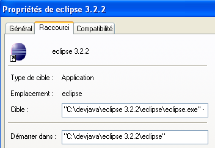
<eclipse>\eclipse.exe" -vm "C:\Program Files\Java\jre1.6.0_01\bin\javaw.exe" -vmargs -Xms40m -Xmx512m | |
cartella <eclipse> di installazione di Eclipse |
Fatto ciò, avviamo Eclipse tramite questo collegamento. Viene visualizzata una prima finestra di dialogo:

Un [workspace] è un'area di lavoro. Accettiamo i valori predefiniti proposti. Per impostazione predefinita, i progetti Eclipse creati verranno salvati nella cartella <workspace> specificata in questa finestra di dialogo. È possibile aggirare questo comportamento. È ciò che faremo sistematicamente. Pertanto, la risposta fornita in questa finestra di dialogo non è rilevante.
Superata questa fase, viene visualizzato l’ambiente di sviluppo Eclipse:

Chiudiamo la vista [Welcome] come suggerito sopra:

Prima di creare un progetto Java, configureremo Eclipse per indicare il JDK da utilizzare per la compilazione dei progetti Java. A tal fine, selezioniamo l’opzione [Window / Preferences / Java / Installed JREs ]:

Normalmente, il JRE (Java Runtime Environment) utilizzato per avviare Eclipse stesso dovrebbe essere presente nell’elenco dei JRE. Normalmente sarà l’unico. È possibile aggiungere ulteriori JRE tramite il pulsante [Add]. A tal fine, occorre specificare la radice del JRE. Il pulsante [Search], invece, avvierà una ricerca di JREs sul disco. È un buon modo per sapere a che punto si è con i JREs che si installano e poi ci si dimentica di disinstallare quando si passa a una versione più recente. Nell’immagine sopra, il JRE selezionato è quello che verrà utilizzato per compilare ed eseguire i progetti Java. È quello che è stato installato al paragrafo 5.1 e che è servito anche per avviare Eclipse. Facendo doppio clic su di esso si accede alle sue proprietà:

Ora creiamo un progetto Java [File / New / Project]:
 |  |
Selezionare [Java Project], quindi [Next] ->

In [2], si indica una cartella vuota in cui verrà installato il progetto Java. In [1], si assegna un nome al progetto. Non è necessario che il nome del progetto corrisponda a quello della cartella, come potrebbe far credere l’esempio sopra riportato. Fatto ciò, si utilizza il pulsante [Next] per passare alla pagina successiva della procedura guidata di creazione:

Qui sopra, creiamo una cartella dedicata all'interno del progetto per archiviare i file sorgente (.java):

 |
- in [1], vediamo la cartella [src] in cui saranno archiviati i file sorgente .java
- in [2], vediamo la cartella [bin] in cui saranno archiviati i file compilati .class
Concludiamo la procedura guidata con [Finish]. A questo punto disponiamo di una struttura di base per un progetto Java:

Facciamo clic con il tasto destro del mouse sul progetto [test1] per creare una classe Java:

 |
- in [1], la cartella in cui verrà creata la classe. Eclipse propone per impostazione predefinita la cartella del progetto corrente.
- in [2], il pacchetto in cui verrà inserita la classe
- in [3], il nome della classe
- in [4], richiediamo che venga generato il metodo statico [main]
Confermiamo la procedura guidata tramite [Finish]. Il progetto viene quindi arricchito con una classe:

Eclipse ha generato lo scheletro della classe. È possibile visualizzarlo facendo doppio clic su [Test1.java] qui sopra:

Modifichiamo il codice sopra riportato nel modo seguente:

Eseguiamo il programma [Test1.java]: [clic droit sur Test1.java -> Run As -> Java Application]

Il risultato dell'esecuzione viene visualizzato nella finestra [Console]:

La finestra [Console] dovrebbe apparire per impostazione predefinita. In caso contrario, è possibile richiederne la visualizzazione tramite [Window/Show View/Console]:

5.2.2. Scelta del compilatore
Eclipse consente di generare codice compatibile con Java 1.4, Java 1.5 e Java 1.6. Per impostazione predefinita, è configurato per generare codice compatibile con Java 1.4. Il codice API e JPA richiede Java 1.5. Modifichiamo il tipo di codice generato da [Window / Preferences / Java / Compiler]:
 |
- in [1]: scelta dell’opzione [Java / Compiler]
- in [2]: selezione della compatibilità con Java 5.0
5.2.3. Installazione dei plugin Callisto
La versione base installata sopra consente di creare applicazioni Java da console, ma non applicazioni Java di tipo web o Swing; in caso contrario, è necessario fare tutto da soli. Installeremo diversi plugin:
Procediamo in questo modo [Help/Software Udates/Find and Install]:
 |
- in [2], si specifica che si desidera installare nuovi plugin
 |
- in [3], si indicano i siti da esplorare per trovare i plugin
- in [4], si selezionano i plugin desiderati
 |
- in [5], Eclipse segnala che è stato selezionato un plugin che dipende da altri plugin non selezionati
- in [6], si utilizza il pulsante [Select Required] per selezionare automaticamente i plugin mancanti
- in [7], si accettano i termini delle licenze di questi vari plugin
 |
- in [8], viene visualizzato l'elenco di tutti i plugin che verranno installati
- in [9], si avvia il download di questi plugin
- in [10], una volta scaricati, li si installa tutti senza verificarne la firma
 |
- in [11], al termine dell'installazione dei plugin, si lascia che Eclipse si riavvii
- in [12]; se si esegue [File/New/Project], si scopre che ora è possibile creare applicazioni web, cosa che inizialmente non era possibile.
5.2.4. Installazione del plugin [TestNG]
TestNG (Test Next Generation) è uno strumento per i test unitari simile, nella sua concezione, a JUnit. Tuttavia, apporta miglioramenti che ci inducono a preferirlo, in questo contesto, a JUnit. Procediamo come in precedenza: [Help/Software Udates/Find and Install]:
 |
- in [2], si specifica che si desidera installare nuovi plugin
 |
- in [3a], il sito di download di [TestNG] non è presente. Lo aggiungiamo con [3b]
- in [4b]: il sito del plugin è [http://beust.com/eclipse]. In [4a], inseriamo ciò che vogliamo.
 |
- in [5a], il plugin [TestNG] è selezionato per l’aggiornamento. In [5b], si avvia l’aggiornamento.
- In [6], è stata stabilita la connessione con il sito del plugin. Ci vengono presentati tutti i plugin disponibili sul sito. Ne selezioniamo uno solo, in questo caso, prima di passare alla fase successiva.
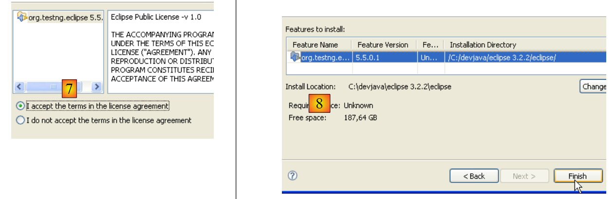 |
- in [7], si accettano i termini della licenza del plugin
- in [8], viene visualizzato l’elenco di tutti i plugin che verranno installati, uno in questo caso. Si avvia il download. Successivamente, tutto procede come descritto sopra per i plugin Callisto.
Una volta riavviato Eclipse, è possibile verificare la presenza del nuovo plugin, ad esempio visualizzando le viste disponibili [Window / show View / Other]:
 |
Come si vede sopra, è presente una vista [TestNG] che prima non esisteva.
5.2.5. Installazione del plugin [Hibernate Tools]
Hibernate è un provider JPA e il plugin [Hibernate Tools] per Eclipse è utile per lo sviluppo di applicazioni JPA. Nel maggio 2007, solo la sua ultima versione (3.2.0beta9) consente di lavorare con Hibernate/JPA e non è disponibile tramite il meccanismo appena descritto. Sono disponibili solo le versioni precedenti. Procederemo quindi in modo diverso.
Il plugin è disponibile sul sito di Hibernate Tools: http://tools.hibernate.org/.
 |
- in [1], si seleziona l’ultima versione di Hibernate Tools
- in [2], la si scarica
 |
- in [3], con un programma di decompressione, si decomprime nella cartella <eclipse> il file zip scaricato (è preferibile che Eclipse non sia attivo)
- in [4], si accetta che alcuni file vengano sovrascritti durante l'operazione
Si riavvia Eclipse:
 |
- in [1]: si apre una prospettiva
- in [2]: ora è presente una prospettiva [Hibernate Console]
Non andremo oltre con il plugin [Hibernate Tools] (Cancel in [2]). Il suo funzionamento è spiegato negli esempi del tutorial.
A volte Eclipse non rileva la presenza di nuovi plugin. È possibile forzare una nuova scansione di tutti i plugin con l’opzione -clean. In questo modo, il file eseguibile del collegamento di Eclipse verrebbe modificato come segue:
"<eclipse>\eclipse.exe" -clean -vm "C:\Program Files\Java\jre1.6.0_01\bin\javaw.exe" -vmargs -Xms40m -Xmx512m
Una volta che Eclipse avrà rilevato i nuovi plugin, si rimuoverà l’opzione -clean sopra indicata.
5.2.6. Installazione del plugin [SQL Explorer]
Ora installeremo un plugin che ci consentirà di esplorare il contenuto di un database direttamente da Eclipse. I plugin disponibili per Eclipse sono reperibili sul sito [http://eclipse-plugins.2y.net/eclipse/plugins.jsp]:
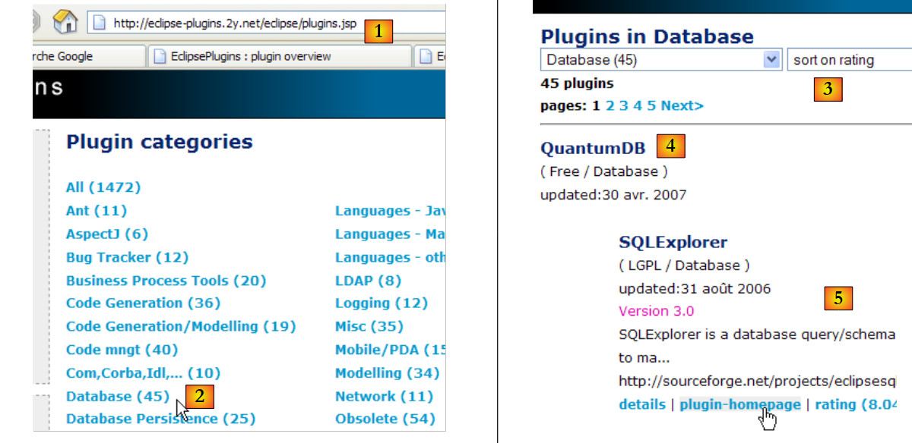 |
- su [1]: il sito dei plugin di Eclipse
- su [2]: selezionare la categoria [Database]
- in [3]: nella categoria [Database], scegliere la visualizzazione per classifica (poco affidabile dato il numero esiguo di votanti)
- in [4]: QuantumDB è al primo posto
- in [5]: scegliamo SQLExplorer, più vecchio, meno ben posizionato (3°) ma comunque ottimo. Andiamo sul sito del plugin [plugin-homepage]
 |
- in [6] e [7]: procediamo al download del plugin.
 |
- e [8]: decomprimere il file zip del plugin nella cartella di Eclipse.
Per verificare, riavviare Eclipse, eventualmente con l'opzione -clean:
 |
- in [1]: aprire una nuova prospettiva
- in [2]: si nota che è disponibile una prospettiva [SQL Explorer]. Ne riparleremo in seguito.
5.3. Il contenitore di servlet Tomcat 5.5
5.3.1. Installazione
Per eseguire i servlet, è necessario un contenitore di servlet. Qui ne presentiamo uno, Tomcat 5.5, disponibile all’URL http://tomcat.apache.org/. Indichiamo la procedura (maggio 2007) per installarlo. Se è già installata una versione precedente di Tomcat, è preferibile rimuoverla prima.

Per scaricare il prodotto, seguire il link [Tomcat 5.x] riportato sopra:

Si potrà scaricare il file .exe destinato alla piattaforma Windows. Una volta scaricato, avviare l’installazione di Tomcat facendo doppio clic sul file:

Accettare i termini della licenza ->

Eseguire [next] ->

Accettare la cartella di installazione proposta o modificarla con [Browse] ->

Impostare nome utente e password dell'amministratore del server Tomcat. Qui è stato inserito [admin / admin] ->
 |
Tomcat 5.x richiede JRE 1.5. Normalmente dovrebbe individuare quello installato sul proprio computer. Sopra, il percorso indicato è quello di JRE 1.6 scaricato al paragrafo 5.1. Se non viene trovato alcun JRE, specificarne la directory principale utilizzando il pulsante [1]. Una volta fatto ciò, utilizzare il pulsante [Install] per installare Tomcat 5.x ->

Il pulsante [Finish] completa l'installazione. La presenza di Tomcat è segnalata da un'icona sulla destra nella barra delle applicazioni di Windows:

Facendo clic con il tasto destro su questa icona si accede ai comandi Avvia – Arresta del server:

Utilizziamo l'opzione [Stop service] per arrestare immediatamente il server web:

Si noti il cambiamento di stato dell’icona. Quest’ultima può essere rimossa dalla barra delle applicazioni:
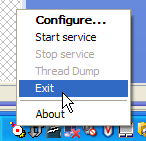
L'installazione di Tomcat è avvenuta nella cartella scelta dall'utente, che d'ora in poi chiameremo <tomcat>. La struttura di questa cartella per la versione Tomcat 5.5.23 scaricata è la seguente:

L’installazione di Tomcat ha aggiunto una serie di collegamenti nel menu [Démarrer]. Utilizziamo il collegamento [Monitor] riportato di seguito per avviare lo strumento di arresto/avvio di Tomcat:

A questo punto viene visualizzata l’icona mostrata in precedenza:
Il monitor di Tomcat può essere attivato facendo doppio clic su questa icona:

I pulsanti [Start - Stop - Pause] - Restart ci consentono di avviare, arrestare e riavviare il server. Avviamo il server tramite [Start], quindi, utilizzando un browser, accediamo all'URL http://localhost:8080. Dovremmo visualizzare una pagina simile alla seguente:

È possibile seguire i link riportati di seguito per verificare la corretta installazione di Tomcat:

Tutti i link presenti nella pagina [http://localhost:8080] sono interessanti e il lettore è invitato a esplorarli. Avremo modo di tornare sui link che consentono di gestire le applicazioni web distribuite all’interno del server:

5.3.2. Distribuzione di un’applicazione web all’interno del server Tomcat
5.3.3. Distribuzione
Un'applicazione web deve seguire determinate regole per poter essere distribuita all'interno di un contenitore di servlet. Indichiamo con <webapp> la cartella di un'applicazione web. Un'applicazione web è composta da:
nella cartella <webapp>\WEB-INF\classes | |
nella cartella <webapp>\WEB-INF\lib | |
nella cartella <webapp> o nelle sottocartelle |
L'applicazione web è configurata tramite un file XML: <webapp>\WEB-INF\web.xml. Questo file non è necessario nei casi semplici, in particolare quando l’applicazione web contiene solo file statici. Creiamo il seguente file HTML:
<html>
<head>
<title>Application exemple</title>
</head>
<body>
Application exemple active ....
</body>
</html>
e salviamolo in una cartella:

Se carichiamo questo file in un browser, otteniamo la seguente pagina:
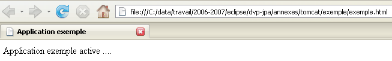
Il codice URL visualizzato dal browser mostra che la pagina non è stata fornita da un server web, ma caricata direttamente dal browser. Ora vogliamo che sia disponibile tramite il server web Tomcat.
Torniamo alla struttura delle directory di <tomcat>:
La configurazione delle applicazioni web distribuite all’interno del server Tomcat avviene tramite i file XML presenti nella cartella [<tomcat>\conf\Catalina\localhost]:
 |  |
Questi file XML possono essere creati manualmente poiché la loro struttura è semplice. Anziché seguire questa procedura, utilizzeremo gli strumenti web messi a disposizione da Tomcat.
5.3.4. Amministrazione del e Tomcat
Nella sua pagina iniziale http://localhost:8080, il server mette a disposizione dei link per la sua amministrazione:
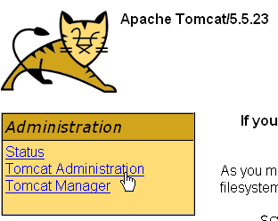
Il link [Tomcat Administration] ci offre la possibilità di configurare le risorse messe a disposizione da Tomcat per le applicazioni web distribuite al suo interno, ad esempio un pool di connessioni a un database. Seguiamo il link:

La pagina visualizzata ci indica che l’amministrazione di Tomcat 5.x richiede un pacchetto specifico denominato «admin». Torniamo al sito di Tomcat [http://tomcat.apache.org/download-55.cgi]:
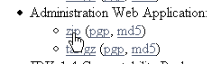
Scarichiamo il file zip denominato [Administration Web Application] e poi lo decomprimiamo. Il suo contenuto è il seguente:

La cartella [admin] deve essere copiata in [<tomcat>\server\webapps], dove <tomcat> è la cartella in cui è stato installato Tomcat 5.x:

La cartella [localhost] contiene un file [admin.xml] che deve essere copiato in [<tomcat>\conf\Catalina\localhost]:

Arrestiamo e riavviamo Tomcat se era attivo. Quindi, con un browser, richiediamo nuovamente la pagina iniziale del server web:
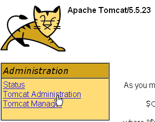
Seguiamo il link [Tomcat Administration]. Otteniamo una pagina di autenticazione (per visualizzarla, potrebbe essere necessario ricaricare la pagina):
 |  |
Qui è necessario reinserire le informazioni fornite durante l’installazione di Tomcat. Nel nostro caso, inseriamo la coppia admin / admin. Il pulsante [Login] ci porta alla pagina seguente:

Questa pagina consente all'amministratore di Tomcat di definire
- le fonti di dati (Data Sources),
- le informazioni necessarie per l'invio della posta (Mail Sessions),
- i dati di ambiente accessibili a tutte le applicazioni (Environment Entries),
- di gestire gli utenti/amministratori di Tomcat (Users),
- di gestire i gruppi di utenti (Groups),
- definire i ruoli (= ciò che un utente può o non può fare),
- definire le caratteristiche delle applicazioni web distribuite dal server (Service Catalina)
Seguiamo il link [Roles] riportato sopra:

Un ruolo consente di definire ciò che un utente o un gruppo di utenti può o non può fare. A un ruolo vengono associati determinati diritti. Ogni utente è associato a uno o più ruoli e dispone dei diritti ad essi correlati. Il ruolo [manager] riportato di seguito conferisce il diritto di gestire le applicazioni web distribuite in Tomcat (distribuzione, avvio, arresto, scaricamento). Creeremo un utente [manager] che assoceremo al ruolo [manager] per consentirgli di gestire le applicazioni di Tomcat. A tal fine, seguiamo il link [Users] nella pagina di amministrazione:

Notiamo che esistono già alcuni utenti. Utilizziamo l'opzione [Create New User] per creare un nuovo utente:

Assegniamo all’utente «manager» la password «manager» e gli attribuiamo il ruolo di «manager». Utilizziamo il pulsante [Save] per confermare l’aggiunta. Il nuovo utente compare nell’elenco degli utenti:

Questo nuovo utente verrà aggiunto al file [<tomcat>\conf\tomcat-users.xml]:

il cui contenuto è il seguente:
<?xml version='1.0' encoding='utf-8'?>
<tomcat-users>
<role rolename="tomcat"/>
<role rolename="role1"/>
<role rolename="manager"/>
<role rolename="admin"/>
<user username="tomcat" password="tomcat" roles="tomcat"/>
<user username="role1" password="tomcat" roles="role1"/>
<user username="both" password="tomcat" roles="tomcat,role1"/>
<user username="manager" password="manager" fullName="" roles="manager"/>
<user username="admin" password="admin" roles="admin,manager"/>
</tomcat-users>
- riga 10: l'utente [manager] che è stato creato
Un altro modo per aggiungere utenti consiste nel modificare direttamente questo file. È proprio così che bisogna procedere se, per caso, si è dimenticata la password dell'amministratore «admin» o del «manager».
5.3.5. Gestione delle applicazioni web distribuite
Torniamo ora alla pagina iniziale [http://localhost:8080] e seguiamo il link [Tomcat Manager]:

Si apre quindi una pagina di autenticazione. Effettuiamo l’accesso come manager / manager, c.a.d, l’utente con il ruolo [manager] che abbiamo appena creato. Infatti, solo un utente con questo ruolo può utilizzare questo link. Alla riga 11 di [tomcat-users.xml], vediamo che l’utente [admin] possiede anche il ruolo [manager]. Potremmo quindi utilizzare anche l’autenticazione [admin / admin].

Otteniamo una pagina che elenca le applicazioni attualmente distribuite in Tomcat:

Possiamo aggiungere una nuova applicazione tramite i moduli situati in fondo alla pagina:

In questo caso, vogliamo distribuire in Tomcat l’applicazione di esempio che abbiamo creato in precedenza. Procediamo come segue:

/esempio | il nome utilizzato per indicare l’applicazione web da distribuire | |
C:\data\lavoro\2006-2007\eclipse\dvp-jpa\allegati\tomcat\esempio | la cartella dell'applicazione web |
Per ottenere il file [C:\data\travail\2006-2007\eclipse\dvp-jpa\annexes\tomcat\exemple\exemple.html], chiederemo a Tomcat il file URL e [http://localhost:8080/exemple/exemple.html]. Il contesto serve ad assegnare un nome alla radice dell’albero dell’applicazione web distribuita. Utilizziamo il pulsante [Deploy] per eseguire la distribuzione dell’applicazione. Se tutto va a buon fine, otteniamo la seguente pagina di risposta:

e la nuova applicazione compare nell’elenco delle applicazioni distribuite:
 |
Commentiamo la riga del contesto /esempio sopra riportata:
link a http://localhost:8080/exemple | |
consente di avviare l'applicazione | |
consente di chiudere l'applicazione | |
consente di ricaricare l'applicazione. Ciò è necessario, ad esempio, quando si sono aggiunte, modificato o eliminato alcune classi dell'applicazione. | |
eliminazione del contesto [/exemple]. L'applicazione scompare dall'elenco delle applicazioni disponibili. |
Ora che la nostra applicazione /esempio è stata distribuita, possiamo eseguire alcuni test. Richiediamo la pagina [exemple.html] tramite l’URL [http://localhost:8080/exemple/vues/exemple.html]:

Un altro modo per distribuire un'applicazione web all'interno del server Tomcat consiste nell'inserire le informazioni che abbiamo fornito tramite l'interfaccia web in un file [contexte].xml collocato nella cartella [<tomcat>\conf\Catalina\localhost], dove [contexte] è il nome dell'applicazione web.
Torniamo all’interfaccia di amministrazione di Tomcat:

Eliminiamo l’applicazione [/exemple] con il relativo collegamento [Undeploy]:

L'applicazione [/exemple] non fa più parte dell'elenco delle applicazioni attive. Ora definiamo il seguente file [exemple.xml]:
Il file XML è costituito da un unico tag <Context> il cui attributo docBase definisce la cartella contenente l’applicazione web da distribuire. Inseriamo questo file in <tomcat>\conf\Catalina\localhost:

Se necessario, arrestiamo e riavviamo Tomcat, quindi visualizziamo l’elenco delle applicazioni attive tramite l’amministratore di Tomcat:

L'applicazione [/exemple] è presente. Richiediamo, tramite un browser, l'URL:
[http://localhost:8080/exemple/exemple.html]:

Un'applicazione web così distribuita può essere rimossa dall'elenco delle applicazioni distribuite, allo stesso modo di prima, tramite il link [Undeploy]:
In questo caso, il file [exemple.xml] viene automaticamente rimosso dalla cartella [<tomcat>\conf\Catalina\localhost].
Infine, per distribuire un’applicazione web all’interno di Tomcat, è anche possibile definirne il contesto nel file [<tomcat>\conf\server.xml]. Non approfondiremo questo argomento in questa sede.
5.3.6. Applicazione web con pagina iniziale
Quando si richiede l’URL [http://localhost:8080/exemple/], si ottiene la seguente risposta:

Con alcune versioni precedenti di Tomcat, avremmo ottenuto il contenuto della cartella fisica dell’applicazione [/exemple].
È possibile fare in modo che, quando viene richiesto il contesto, venga visualizzata una cosiddetta pagina iniziale. A tal fine, creiamo un file [web.xml] che inseriamo nella cartella <esempio>\WEB-INF, dove <esempio> è la cartella fisica dell'applicazione web [/exemple]. Il file è il seguente:
- righe 2-5: il tag radice <web-app> con attributi ottenuti tramite copia/incolla dal file [web.xml] dell'applicazione [/admin] di Tomcat (<tomcat>/server/webapps/admin/WEB-INF/web.xml).
- riga 7: il nome di visualizzazione dell’applicazione web. Si tratta di un nome libero che presenta meno vincoli rispetto al nome di contesto dell’applicazione. È possibile inserire spazi, ad esempio, cosa che non è possibile con il nome di contesto. Questo nome viene visualizzato, ad esempio, dall’amministratore di Tomcat:
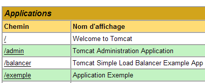
- riga 8: descrizione dell’applicazione web. Questo testo può poi essere recuperato tramite programmazione.
- righe 9-11: l’elenco dei file di benvenuto. Il tag <welcome-file-list> serve a definire l’elenco delle viste da presentare quando un client richiede il contesto dell’applicazione. Possono esserci più viste. La prima trovata viene presentata al client. In questo caso ne abbiamo solo una: [/exemple.html]. Pertanto, quando un client richiederà l’URL [/exemple], gli verrà effettivamente fornito l’URL [/exemple/exemple.html].
Salviamo questo file [web.xml] in <esempio>\WEB-INF:

Se Tomcat è ancora attivo, è possibile forzarlo a ricaricare l’applicazione web [/exemple] tramite il link [Recharger]:

Durante questa operazione di "ricaricamento", Tomcat rilegge il file [web.xml] contenuto in [<exemple>\WEB-INF], se presente. In questo caso lo è. Se Tomcat fosse in arresto, riavviarlo.
Con un browser, richiediamo il file URL [http://localhost:8080/exemple/]:

Il meccanismo dei file di benvenuto ha funzionato.
5.3.7. Integrazione di Tomcat in Eclipse
Ora integreremo Tomcat in Eclipse. Questa integrazione consente di:
- avviare/arrestare Tomcat direttamente da Eclipse
- sviluppare applicazioni web Java ed eseguirle su Tomcat. L’integrazione Eclipse/Tomcat consente di tracciare (debug) l’esecuzione dell’applicazione, compresa l’esecuzione delle classi Java (servlet) eseguite da Tomcat.
Avviamo Eclipse, quindi visualizziamo la vista [Servers]:
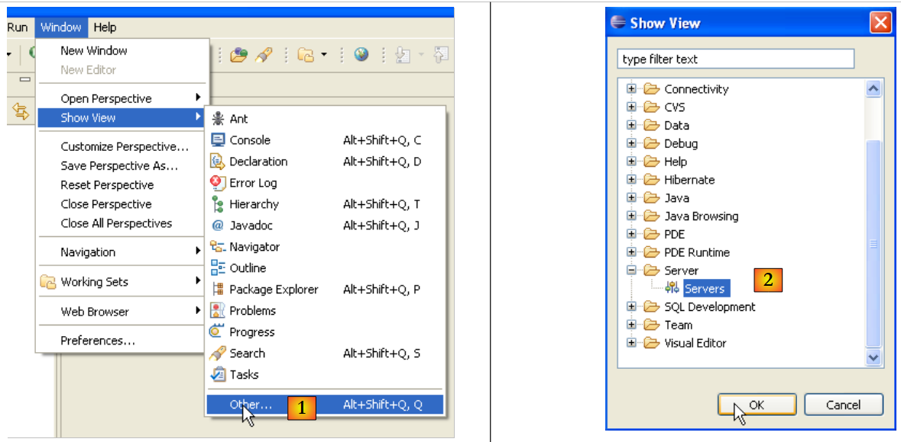 |
- in [1]: Window/Show View/Other
- in [2]: selezionare la vista [Servers] e passare a [OK]
 |
- in [1], si ottiene una nuova vista [Servers]
- in [2], fare clic con il tasto destro sulla vista e richiedere la creazione di un nuovo server [New/Server]
- in [3], si seleziona il server [Tomcat 5.5], quindi si passa a [Next]
 |
- in [4], si indica la cartella di installazione di Tomcat 5.5
- in [5], si indica che al momento non ci sono progetti Eclipse/Tomcat. Si esegue [Finish]
L'aggiunta del server si concretizza con l'inserimento di una cartella nell'esploratore dei progetti di Eclipse [6] e la comparsa di un server nella vista [servers] [7]:
 |
Nella vista [Servers] compaiono tutti i server dichiarati; in questo caso, solo il server Tomcat 5.5 che abbiamo appena registrato. Facendo clic con il tasto destro del mouse su di esso si accede ai comandi che consentono di avviare, arrestare e riavviare il server:

Nell’immagine sopra, avviamo il server. Durante l’avvio, nella vista [Console] vengono registrati alcuni log:
La comprensione di questi log richiede una certa dimestichezza. Per il momento non ci soffermeremo su questo aspetto. È tuttavia importante verificare che non segnalino errori di caricamento dei contesti. Infatti, all’avvio, il server Tomcat / Eclipse cercherà di caricare il contesto delle applicazioni che gestisce. Caricare il contesto di un’applicazione implica l’utilizzo del relativo file [web.xml] e il caricamento di una o più classi che lo inizializzano. Possono quindi verificarsi diversi tipi di errori:
- il file [web.xml] presenta errori di sintassi. Si tratta dell’errore più frequente. Si consiglia di utilizzare uno strumento in grado di verificare la validità di un documento XML durante la sua creazione.
- alcune classi da caricare non sono state trovate. Vengono cercate nei file [WEB-INF/classes] e [WEB-INF/lib]. In genere è necessario verificare la presenza delle classi necessarie e l’ortografia di quelle dichiarate nel file [web.xml].
Il server avviato da Eclipse non ha la stessa configurazione di quello installato al paragrafo 5.3. Per verificarlo, richiediamo l'URL [http://localhost:8080] con un browser:

Questa risposta non indica che il server non funzioni, ma che la risorsa / richiesta non è disponibile. Con il server Tomcat integrato in Eclipse, queste risorse saranno progetti web. Lo vedremo in seguito. Per il momento, fermiamo Tomcat:

La modalità di funzionamento precedente può essere modificata. Torniamo alla vista [Servers] e facciamo doppio clic sul server Tomcat per accedere alle sue proprietà:
 | 1  |
La casella di controllo [1] è responsabile della modalità di funzionamento precedente. Quando è selezionata, le applicazioni web sviluppate in Eclipse non vengono dichiarate nei file di configurazione del server Tomcat associato, ma in file di configurazione separati. In questo modo, non si dispone delle applicazioni predefinite all’interno del server Tomcat: [admin] e [manager], che sono due applicazioni utili. Pertanto, deselezioneremo [1] e riavvieremo Tomcat:
 |  |
Fatto ciò, accediamo all’URL [http://localhost:8080] con un browser:

Ritroviamo il funzionamento descritto al paragrafo 5.3.4.
Nei nostri esempi precedenti abbiamo utilizzato un browser esterno a Eclipse. È possibile utilizzare anche un browser integrato in Eclipse:
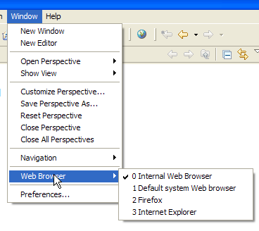
Selezioniamo qui sopra il browser interno. Per avviarlo da Eclipse è possibile utilizzare la seguente icona:
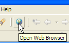
Il browser effettivamente avviato sarà quello selezionato dall’opzione [Window -> Web Browser]. In questo caso, si avvia il browser interno:
1

Se necessario, avviamo Tomcat da Eclipse e immettiamo in [1] l’URL [http://localhost:8080]:

Seguiamo il link [Tomcat Manager]:

Viene richiesta la coppia [login / mot de passe] necessaria per accedere all'applicazione [manager]. In base alla configurazione di Tomcat che abbiamo effettuato in precedenza, è possibile inserire [admin / admin] o [manager / manager]. Si ottiene quindi l'elenco delle applicazioni distribuite:

5.4. SGBD e Firebird
5.4.1. SGBD Firebird
Il SGBD Firebird è disponibile all'URL [http://www.firebirdsql.org/]:
 |
- in [1]: si utilizza l'opzione [Download.Firebird Relational Database]
- in [2]: si specifica la versione desiderata di Firebird
- in [3]: si scarica il file binario di installazione
Una volta scaricato il file [3], fare doppio clic su di esso per installare Firebird SGBD. SGBD viene installato in una cartella il cui contenuto è simile al seguente:

I file binari si trovano nella cartella [bin]:

consente di avviare/arrestare il file SGBD | |
client in modalità terminale che consente di gestire i database |
Si noti che, per impostazione predefinita, l'amministratore di SGBD si chiama [SYSDBA] e la sua password è [masterkey]. In [Démarrer] sono stati installati i seguenti menu:

L'opzione [Firebird Guardian] consente di avviare/arrestare il SGBD. Dopo l'avvio, l'icona del SGBD rimane nella barra delle applicazioni di Windows:
 |
Per creare e gestire database Firebird con il client da riga di comando [isql.exe], è necessario consultare la documentazione fornita con il prodotto, accessibile tramite i collegamenti di Firebird presenti in [Démarrer/Programmes/Firebird 2.0].
Un modo rapido per lavorare con Firebird e imparare il linguaggio SQL è utilizzare un client grafico. Un esempio di tale client è IB-Expert, descritto nel paragrafo seguente.
5.4.2. Lavorare con Firebird SGBD con IB- Expert
Il sito principale di IB-Expert è [http://www.ibexpert.com/].
 |
 |
- in [1], selezionare IBExpert
- in [2], si seleziona il download dopo aver eventualmente scelto la lingua desiderata
- in [3], si seleziona la versione detta «personale» poiché è gratuita. È tuttavia necessario registrarsi sul sito.
- in [4], si scarica IBExpert
IBExpert viene installato in una cartella simile alla seguente:

Il file eseguibile è [ibexpert.exe]. Normalmente è disponibile un collegamento nel menu [Démarrer]:

Una volta avviato, IBExpert visualizza la seguente finestra:

Utilizziamo l'opzione [Database/Create Database] per creare un database:

potrebbe essere [local] o [remote]. In questo caso il nostro server si trova sulla stessa macchina di [IBExpert]. Scegliamo quindi [local] | |
utilizzare il pulsante di tipo [dossier] dal menu a tendina per indicare il file del database. Firebird inserisce l’intero database in un unico file. Questo è uno dei suoi punti di forza. Il trasferimento del database da una postazione all’altra avviene semplicemente copiando il file. Il suffisso [.fdb] viene aggiunto automaticamente. | |
SYSDBA è l’amministratore predefinito delle attuali distribuzioni di Firebird | |
masterkey è la password dell'amministratore SYSDBA delle distribuzioni attuali di Firebird | |
il dialetto SQL da utilizzare | |
se la casella è spuntata, IBExpert mostrerà un link al database creato dopo averlo creato |
Se, cliccando sul pulsante di creazione [OK], viene visualizzato il seguente avviso:

significa che non avete avviato Firebird. Avviatelo. Si aprirà una nuova finestra:

Famiglia di caratteri da utilizzare. Si consiglia di selezionare dall'elenco a discesa la famiglia [ISO-8859-1], che consente di utilizzare i caratteri latini accentati. |
[IBExpert] è in grado di gestire diversi SGBD derivati da Interbase. Selezionare la versione di Firebird che avete installato. |
Una volta confermata questa nuova finestra da [Register], si ottiene il risultato [1] nella finestra [Database Explorer]. Questa finestra può essere chiusa per errore. Per visualizzarla nuovamente, eseguire [2]:
 |
Per accedere al database creato, è sufficiente fare doppio clic sul relativo collegamento. IBExpert visualizza quindi una struttura ad albero che consente di accedere alle proprietà del database:

5.4.3. Creazione di una tabella di dati
Creiamo una tabella. Facciamo clic con il tasto destro su [Tables] (vedi finestra sopra) e selezioniamo l’opzione [New Table]. Si apre la finestra di definizione delle proprietà della tabella:
 |
Iniziamo assegnando alla tabella il nome [ARTICLES] utilizzando il campo di immissione [1]:

Utilizziamo il campo di immissione [2] per definire una chiave primaria [ID]:
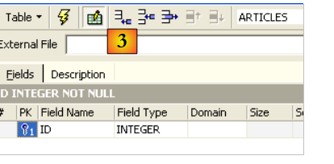
Un campo viene impostato come chiave primaria facendo doppio clic sul campo [PK] (Primary Key). Aggiungiamo dei campi utilizzando il pulsante situato sopra [3]:

Finché non si «compila» la definizione, la tabella non viene creata. Utilizziamo il pulsante [Compile] sopra per completare la definizione della tabella. IBExpert prepara le query SQL per la generazione della tabella e richiede conferma:
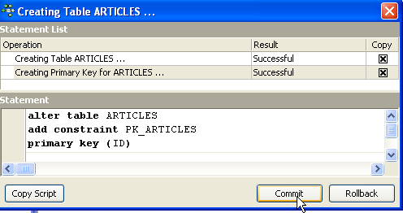
È interessante notare che IBExpert visualizza le query SQL che ha eseguito. Ciò consente di apprendere sia il linguaggio SQL sia il dialetto SQL, eventualmente proprietario, utilizzato. Il pulsante [Commit] consente di confermare la transazione in corso, mentre [Rollback] di annullarla. Qui la si accetta tramite [Commit]. Una volta fatto ciò, IBExpert aggiunge la tabella creata alla struttura ad albero del nostro database:

Facendo doppio clic sulla tabella, si accede alle sue proprietà:

Il pannello [Constraints] ci permette di aggiungere nuovi vincoli di integrità alla tabella. Apriamolo:

Troviamo il vincolo di chiave primaria che abbiamo creato. È possibile aggiungere altri vincoli:
- chiavi esterne [Foreign Keys]
- vincoli di integrità dei campi [Checks]
- vincoli di unicità dei campi [Uniques]
Si noti che:
- i campi [ID, PRIX, STOCKACTUEL, STOKMINIMUM] devono essere >0
- il campo [NOM] deve essere non vuoto e univoco
Apriamo il pannello [Checks] e facciamo clic con il tasto destro del mouse nell'area di definizione dei vincoli per aggiungere un nuovo vincolo:

Definiamo i vincoli desiderati:

Si noti che il vincolo [NOM<>''] utilizza due apostrofi e non virgolette. Compiliamo questi vincoli utilizzando il pulsante [Compile] qui sopra:
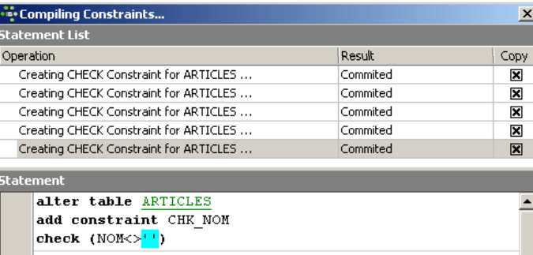
Anche in questo caso, IBExpert fornisce informazioni utili indicando le query SQL che ha eseguito. Passiamo ora al pannello [Constraints/Uniques] per specificare che il nome deve essere univoco. Ciò significa che non è possibile avere due volte lo stesso nome nella tabella.
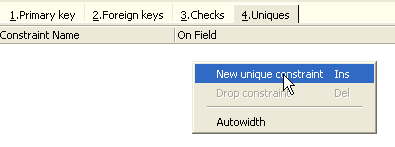
Definiamo il vincolo:

Quindi compiliamolo. Fatto ciò, apriamo il pannello [DDL] (Data Definition Language) della tabella [ARTICLES]:

Questo pannello fornisce il codice SQL per la generazione della tabella con tutti i suoi vincoli. È possibile salvare questo codice in uno script per riutilizzarlo in seguito:
SET SQL DIALECT 3;
SET NAMES ISO8859_1;
CREATE TABLE ARTICLES (
ID INTEGER NOT NULL,
NOM VARCHAR(20) NOT NULL,
PRIX DOUBLE PRECISION NOT NULL,
STOCKACTUEL INTEGER NOT NULL,
STOCKMINIMUM INTEGER NOT NULL
);
ALTER TABLE ARTICLES ADD CONSTRAINT CHK_ID check (ID>0);
ALTER TABLE ARTICLES ADD CONSTRAINT CHK_PRIX check (PRIX>0);
ALTER TABLE ARTICLES ADD CONSTRAINT CHK_STOCKACTUEL check (STOCKACTUEL>0);
ALTER TABLE ARTICLES ADD CONSTRAINT CHK_STOCKMINIMUM check (STOCKMINIMUM>0);
ALTER TABLE ARTICLES ADD CONSTRAINT CHK_NOM check (NOM<>'');
ALTER TABLE ARTICLES ADD CONSTRAINT UNQ_NOM UNIQUE (NOM);
ALTER TABLE ARTICLES ADD CONSTRAINT PK_ARTICLES PRIMARY KEY (ID);
5.4.4. Inserimento di dati in una tabella
È ora il momento di inserire i dati nella tabella [ARTICLES]. A tal fine, utilizziamo il relativo pannello [Data]:

I dati vengono inseriti facendo doppio clic sui campi di immissione di ciascuna riga della tabella. È possibile aggiungere una nuova riga con il pulsante [+], mentre per eliminare una riga si utilizza il pulsante [-]. Queste operazioni vengono eseguite all’interno di una transazione che viene confermata tramite il pulsante [Commit Transaction] (vedi sopra). Senza questa conferma, i dati andranno persi.
5.4.5. L'editor SQL di [IB-Expert]
Il linguaggio SQL (Structured Query Language) consente all'utente di:
- creare tabelle specificando il tipo di dati che andranno memorizzati e i vincoli che tali dati devono soddisfare
- inserire dati al loro interno
- modificarne alcuni
- eliminarne altri
- sfruttarne il contenuto per ottenere informazioni
- ...
IBExpert consente a un utente di eseguire le operazioni da 1 a 4 in modo grafico. Lo abbiamo appena visto. Quando il database contiene numerose tabelle, ciascuna con centinaia di righe, sono necessarie informazioni difficili da ottenere visivamente. Supponiamo, ad esempio, che un negozio online abbia migliaia di acquirenti al mese. Tutti gli acquisti vengono registrati in un database. Dopo sei mesi, si scopre che un prodotto «X» è difettoso. Si desidera contattare tutte le persone che lo hanno acquistato affinché restituiscano il prodotto per una sostituzione gratuita. Come trovare gli indirizzi di questi acquirenti?
- Si potrebbero consultare visivamente tutte le tabelle e cercare questi acquirenti. Ciò richiederebbe alcune ore.
- Si può eseguire un comando SQL che fornirà l’elenco di queste persone in pochi secondi
Il linguaggio SQL è utile non appena
- quando la quantità di dati nelle tabelle è elevata
- quando ci sono molte tabelle collegate tra loro
- quando le informazioni da ottenere sono distribuite su più tabelle
- ...
Presentiamo ora l’editor SQL di IBExpert. È accessibile tramite l’opzione [Tools/SQL Editor] o [F12]:
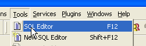
Si accede così a un editor di query avanzato, SQL, con il quale è possibile sperimentare diverse query. Digitiamo una query:

Eseguiamo la query SQL utilizzando il pulsante [Execute] qui sopra. Otteniamo il seguente risultato:

Sopra, la scheda [Results] mostra la tabella dei risultati dell’ordine SQL [Select]. Per emettere un nuovo ordine SQL, è sufficiente tornare alla scheda [Edit]. Si ritrova quindi l’ordine SQL che è stato eseguito.

Diversi pulsanti della barra degli strumenti sono utili:
- il pulsante [New Query] consente di passare a una nuova richiesta SQL:

Si ottiene quindi una pagina di modifica vuota:

A questo punto è possibile inserire un nuovo ordine SQL:
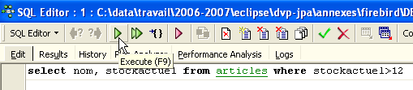
ed eseguirlo:

Torniamo alla scheda [Edit]. I vari ordini SQL emessi vengono memorizzati da [IBExpert]. Il pulsante [Previous Query] consente di tornare a un ordine SQL emesso in precedenza:

Si torna quindi alla richiesta precedente:
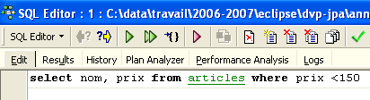
Il pulsante [Next Query] consente invece di passare all’ordine successivo SQL:

Si ritrova quindi l'ordine SQL che segue nell'elenco degli ordini SQL memorizzati:

Il pulsante [Delete Query] consente di eliminare un ordine SQL dall’elenco degli ordini memorizzati:

Il pulsante [Clear Current Query] consente di cancellare il contenuto dell'editor relativo all'ordine SQL visualizzato:

Il pulsante [Commit] consente di confermare definitivamente le modifiche apportate al database:

Il pulsante [RollBack] consente di annullare le modifiche apportate al database dall'ultimo [Commit]. Se non è stato eseguito alcun [Commit] dal momento della connessione al database, vengono annullate le modifiche apportate a partire da tale connessione.
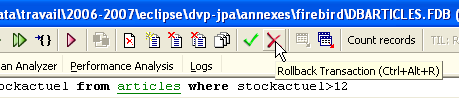
Facciamo un esempio. Inseriamo una nuova riga nella tabella:

Il comando SQL viene eseguito, ma non viene visualizzato nulla. Non è possibile sapere se l’inserimento sia avvenuto. Per verificarlo, eseguiamo il comando SQL dopo [New Query]:
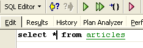
Si ottiene il seguente risultato con [Execute]:
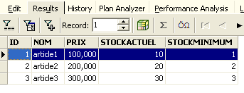
La riga è stata quindi inserita correttamente. Esaminiamo ora il contenuto della tabella in un altro modo. Facciamo doppio clic sulla tabella [ARTICLES] nell’esploratore di database:

Si ottiene la seguente tabella:

Il pulsante con la freccia qui sopra permette di aggiornare la tabella. Dopo l’aggiornamento, la tabella qui sopra non cambia. Sembra che la nuova riga non sia stata inserita. Torniamo all’editor SQL (F12), quindi confermiamo l’ordine SQL emesso con il pulsante [Commit]:

Fatto ciò, torniamo alla tabella [ARTICLES]. Possiamo constatare che nulla è cambiato anche utilizzando il pulsante [Refresh]:

Ora apriamo la scheda [Fields], quindi torniamo alla scheda [Data]. Questa volta la riga inserita appare correttamente:

Quando ha inizio l’esecuzione dei vari comandi SQL, l’editor apre quella che viene definita una transazione sul database. Le modifiche apportate da questi comandi SQL dell’editor SQL saranno visibili solo finché si rimane nello stesso editor SQL (è possibile aprirne diversi). È come se l’editor SQL non lavorasse sul database reale, ma su una propria copia. In realtà, non è esattamente così che avviene, ma questa immagine può aiutarci a comprendere il concetto di transazione. Tutte le modifiche apportate alla copia nel corso di una transazione saranno visibili nel database reale solo dopo essere state convalidate da un [Commit Transaction]. La transazione in corso è quindi terminata e ne inizia una nuova.
Le modifiche apportate nel corso di una transazione possono essere annullate tramite un'operazione denominata [Rollback]. Facciamo il seguente esperimento. Avviamo una nuova transazione (è sufficiente eseguire [Commit] sulla transazione corrente) con il seguente comando SQL:

Eseguiamo questo comando, che elimina tutte le righe della tabella [ARTICLES], quindi eseguiamo [New Query], il nuovo comando SQL, come segue:

Otteniamo il seguente risultato:
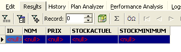
Tutte le righe sono state eliminate. Ricordiamo che l’operazione è stata eseguita su una copia della tabella [ARTICLES]. Per verificarlo, facciamo doppio clic sulla tabella [ARTICLES] qui sotto:
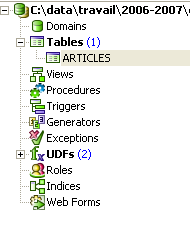
e visualizziamo la scheda [Data]:

Anche utilizzando il pulsante [Refresh] o passando alla scheda [Fields] per poi tornare alla scheda [Data], il contenuto sopra riportato rimane invariato. Questo è stato già spiegato. Ci troviamo in un’altra transazione che opera su una propria copia. Ora torniamo all’editor SQL (F12) e utilizziamo il pulsante [RollBack] per annullare le eliminazioni di righe effettuate:

Viene richiesta una conferma:

Confermiamo. L’editor SQL conferma che le modifiche sono state annullate:

Ripetiamo la richiesta SQL sopra riportata per verificare. Ritroviamo le righe che erano state eliminate:
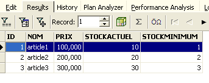
L'operazione [Rollback] ha riportato la copia su cui sta lavorando l'editor SQL allo stato in cui si trovava all'inizio della transazione.
5.4.6. Esportazione di un database Firebird in uno script SQL
Quando si lavora con diversi SGBD, come nel caso del tutorial "Persistenza Java 5 nella pratica", è utile poter esportare un database da un SGBD 1 verso uno script SQL per poi importare quest'ultimo in un SGBD 2. Ciò consente di evitare una serie di operazioni manuali. Tuttavia, ciò non è sempre possibile, poiché i file SGBD presentano spesso estensioni proprietarie SQL.
Vediamo come esportare il database [dbarticles] precedente in uno script SQL:
 |
- in [1]: Strumenti / Estrai MetaData, per estrarre i metadati
- in [2]: scheda Meta Oggetti
- in [3]: selezionare la tabella [Articles] di cui si desidera estrarre la struttura (metadati)
- in [4]: per spostare a destra l’oggetto selezionato a sinistra
 |
- in [5]: la tabella [ARTICLES] farà parte dei metadati estratti
- in [6]: la scheda [Table de données] serve a selezionare le tabelle di cui si desidera estrarre il contenuto (nella fase precedente veniva esportata la struttura della tabella)
- in [7]: per spostare a destra l’oggetto selezionato a sinistra
- in [8]: il risultato ottenuto
 |
- in [9]: la scheda [Options] consente di configurare alcuni parametri dell’estrazione
- in [10]: si deselezionano le opzioni relative alla generazione degli ordini SQL che consentono di connettersi al database. Si tratta di opzioni proprietarie di Firebird e, pertanto, non ci interessano.
- in [11]: la scheda [Sortie] consente di specificare dove verrà generato lo script SQL
- in [12]: si specifica che lo script deve essere generato in un file
- in [13]: si specifica la posizione di questo file
- in [14]: si avvia la generazione dello script SQL
Lo script generato, privato dei commenti, è il seguente:
Nota: le righe 1-2 sono specifiche di Firebird. Devono essere eliminate dallo script generato per ottenere uno script SQL generico.
5.4.7. Driver JDBC di Firebird per
Un programma Java accede ai dati di un database tramite un driver JDBC specifico per il SGBD utilizzato:
 |
In un'architettura multistrato come quella sopra descritta, il driver JDBC [1] viene utilizzato dallo strato [dao] (Data Access Object) per accedere ai dati di un database.
Il driver JDBC di Firebird è disponibile all'URL da cui è stato scaricato Firebird:
 |
 |
- in [1]: si sceglie di scaricare il driver JDBC
- in [2]: si sceglie un driver JDBC compatibile con JDK 1.5
- in [3]: l'archivio contenente il driver JDBC è [jaybird-full-2.1.1.jar]. Estrarremo questo file. Verrà utilizzato per tutti gli esempi JPA con Firebird.
Lo inseriamo in una cartella che d'ora in poi chiameremo <jdbc>:

Per verificare questo driver JDBC, utilizzeremo Eclipse e il plugin SQL Explorer (paragrafo 5.2.6). Iniziamo dichiarando il driver JDBC di Firebird:
 |
- in [1]: selezionare Window / Preferences
- in [2]: selezionare l'opzione SQL Explorer / JDBC Drivers
- in [3]: selezionare il driver JDBC per Firebird
- in [4]: passare alla fase di configurazione
- in [5]: passare alla scheda [Extra Class Path]
- con [6], specificare il file del driver JDBC. Una volta fatto ciò, quest'ultimo apparirà in [7]. Qui si selezionerà il driver precedentemente inserito nella cartella <jdbc>
- in [8]: il nome della classe Java del driver JDBC. È possibile ottenerlo tramite il pulsante [8b].
- si esegue [OK] per confermare la configurazione
 |
- in [9]: il driver JDBC di Firebird è ora configurato. È possibile procedere al suo utilizzo.
 |
- in [1]: aprire una nuova prospettiva
- in [2]: selezionare la prospettiva [SQL Explorer]
 |
- in [3]: creare una nuova connessione
- in [4]: assegnarle un nome
- in [5]: selezionare dall’elenco a discesa il driver JDBC di Firebird
- in [6]: specificare l'URL del database a cui ci si vuole connettere, in questo caso: [jdbc:firebirdsql:localhost/3050:C:\data\2006-2007\eclipse\dvp-jpa\annexes\jpa\jpa.fdb]. [jpa.fdb] è il database creato in precedenza con IBExpert.
- in [7]: il nome utente per la connessione, in questo caso [sysdba], l’amministratore di Firebird
- in [8]: la sua password [masterkey]
- si conferma la configurazione della connessione tramite [OK]
 |
- in [1]: si fa doppio clic sul nome della connessione che si desidera aprire
- in [2]: si effettua l'autenticazione (sysdba, masterkey)
- in [3]: la connessione è aperta
- in [4]: si visualizza la struttura del database. Si vede la tabella [ARTICLES]. La si seleziona.
 |
- in [5]: nella finestra [Database Detail] sono visualizzati i dettagli dell’oggetto selezionato in [4], in questo caso la tabella [ARTICLES]
- in [6]: la scheda [Columns] mostra la struttura della tabella
- in [7]: la scheda [Preview] mostra la struttura della tabella
È possibile eseguire query SQL nella finestra [SQL Editor]:
 |
- in [1]: selezionare una connessione aperta
- in [2]: digitare il comando SQL da eseguire
- in [3]: eseguirlo
- in [4]: riepilogo del comando eseguito
- in [5]: il risultato
5.5. Il SGBD e MySQL5
5.5.1. Installazione
Il SGBD MySQL5 è disponibile all'URL [http://dev.mysql.com/downloads/]:
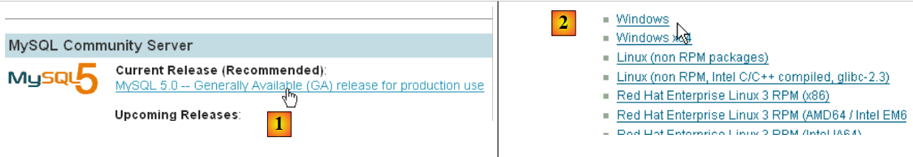 |
- in [1]: scegliere la versione desiderata
- all'indirizzo [2]: scegliere una versione per Windows
 |
- in [3]: scegliere la versione di Windows desiderata
- in [4]: il file zip scaricato contiene un eseguibile [Setup.exe] [4b] che deve essere estratto ed eseguito per installare MySQL5
 |
- in [5]: scegliere un’installazione standard
- in [6]: una volta completata l’installazione, è possibile configurare il server MySQL5
 |
- in [7]: scegliere una configurazione standard, quella che richiede meno domande
- in [8]: il server MySQL5 sarà un servizio Windows
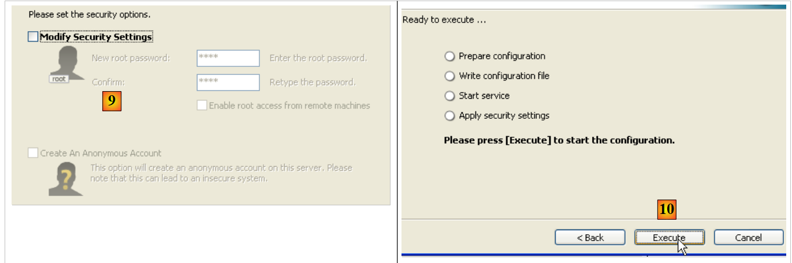 |
- in [9]: per impostazione predefinita, l'amministratore del server è root senza password. È possibile mantenere questa configurazione o assegnare una nuova password a root. Se l'installazione di MySQL5 segue la disinstallazione di una versione precedente, questa operazione potrebbe non andare a buon fine. È più difficile tornare indietro.
- in [10]: viene richiesta la configurazione del server
L'installazione di MySQL5 crea una cartella in [Démarrer / Programmes ]:

È possibile utilizzare [MySQL Server Instance Config Wizard] per riconfigurare il server:
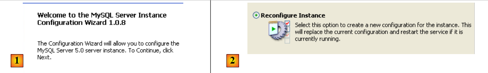 |
 |
 |
- in [3]: si modifica la password di root (in questo caso root/root)
5.5.2. Avvia / Arresta MySQL5
Il server MySQL5 è stato installato come servizio Windows ad avvio automatico, c.a.d avviato all'avvio di Windows. Questa modalità di funzionamento è poco pratica. La modificheremo:
[Démarrer / Panneau de configuration / Performances et maintenance / Outils d'administration / Services ]:
 |
- in [1]: facciamo doppio clic su [Services]
- in [2]: si nota che è presente un servizio denominato [MySQL], che è avviato ([3]) e che il suo avvio è automatico ([4]).
Per modificare questa impostazione, facciamo doppio clic sul servizio [MySQL]:
 |
- in [1]: impostiamo l’avvio del servizio su manuale
- in [2]: lo si arresta
- in [3]: si conferma la nuova configurazione del servizio
Per avviare e arrestare manualmente il servizio MySQL, è possibile creare due collegamenti:
 |
- in [1]: il collegamento per avviare MySQL5
- e [2]: il collegamento per arrestarlo
5.5.3. Client di amministrazione MySQL
Sul sito di MySQL è possibile trovare i client di amministrazione di SGBD:
 |
- in [1]: scegliere [MySQL GUI Tools], che raggruppa diversi client grafici che consentono sia di amministrare il SGBD, sia di utilizzarlo
- per [2]: scegliere la versione Windows più adatta
 |
- in [3]: si scarica un file .msi da eseguire
- in [4]: una volta completata l’installazione, nella cartella [Menu Démarrer / Programmes / mySQL] compaiono nuovi collegamenti.
Avviamo MySQL (tramite i collegamenti creati in precedenza), quindi avviamo [MySQL Administrator] dal menu in alto:
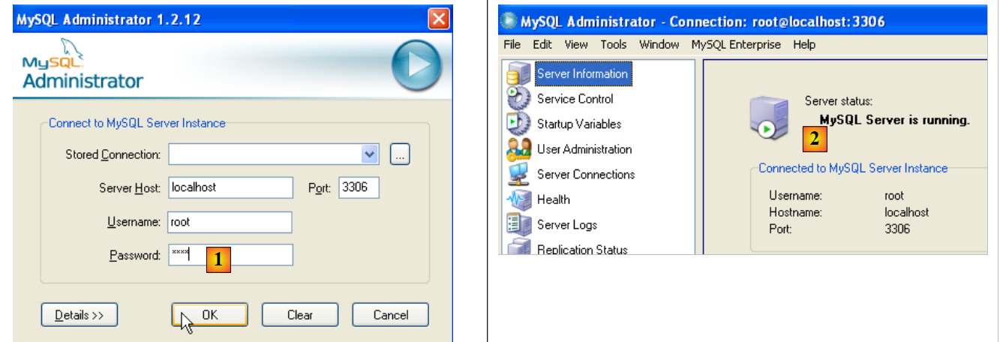 |
- in [1]: inserite la password dell’utente root (in questo caso “root”)
- in [2]: l'accesso è avvenuto e si vede che MySQL è attivo
5.5.4. Creazione di un utente jpa e di un database jpa
Il tutorial utilizza MySQL5 con un database denominato jpa e un utente con lo stesso nome. Ora li creiamo. Innanzitutto l’utente:
 |
- in [1]: selezioniamo [User Administration]
- in [2]: si fa clic con il tasto destro nella sezione [User accounts] per creare un nuovo utente
- in [3]: l’utente si chiama jpa e la sua password è jpa
- in [4]: confermare la creazione
- in [5]: l'utente [jpa] compare nella finestra [User Accounts]
Ora il database:
 |
- in [1]: selezione dell'opzione [Catalogs]
- in [2]: clic con il tasto destro sulla finestra [Schemata] per creare un nuovo schema (che indica un database)
- in [3]: si assegna un nome al nuovo schema
- in [4]: compare nella finestra [Schemata]
 |
- in [5]: si seleziona lo schema [jpa]
- in [6]: compaiono gli oggetti dello schema [jpa], in particolare le tabelle. Non ce ne sono ancora. Con un clic destro sarebbe possibile crearne alcune. Lasciamo che sia il lettore a farlo.
Torniamo all’utente [jpa] per assegnargli tutti i diritti sullo schema [jpa]:
 |
- in [1], poi in [2]: si seleziona l’utente [jpa]
- in [3]: selezionare la scheda [Schema Privileges]
- in [4]: si seleziona lo schema [jpa]
- in [5]: si assegnano all’utente [jpa] tutti i privilegi sullo schema [jpa]
 |
- in [6]: si confermano le modifiche apportate
Per verificare che l'utente [jpa] possa lavorare con lo schema [jpa], si chiude l'amministratore MySQL. Lo si riavvia e questa volta ci si connette con il nome [jpa/jpa]:
 |
- in [1]: si effettua l’autenticazione (jpa/jpa)
- con [2]: la connessione è andata a buon fine e in [Schemata] si vedono gli schemi su cui si hanno i diritti. Si vede lo schema [jpa].
Ora creeremo la stessa tabella [ARTICLES] utilizzata con SGBD Firebird, utilizzando lo script SQL [schema-articles.sql] generato al paragrafo 5.4.6.
 |
- in [1]: utilizzare l'applicazione [MySQL Query Browser]
- in [2], [3], [4]: effettuare l'accesso (jpa / jpa / jpa)
 |
- in [5]: aprire uno script SQL per eseguirlo
- in [6]: indicare lo script [schema-articles.sql] creato al paragrafo 5.4.6.
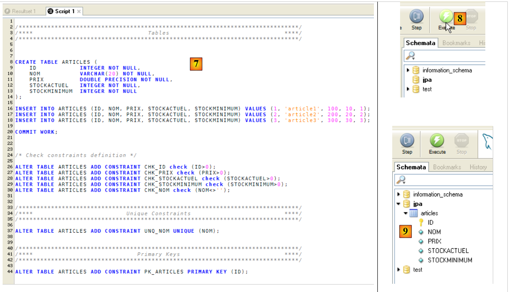 |
- in [7]: lo script caricato
- in [8]: viene eseguito
- in [9]: è stata creata la tabella [ARTICLES]
5.5.5. Driver JDBC da MySQL5
Il driver JDBC da MySQL è scaricabile dalla stessa posizione del SGBD:
 |
 |
- per il [1]: scegliere il driver JDBC adatto
- per [2]: scegliere la versione Windows più adatta
- in [3]: nel file zip scaricato, l'archivio Java contenente il driver JDBC è [mysql-connector-java-5.0.5-bin.jar]. Lo estrarremo per utilizzarlo negli esempi del tutorial JPA.
Lo inseriamo come il precedente (paragrafo 5.4.7) nella cartella <jdbc>:
 |
Per testare questo driver JDBC, utilizzeremo Eclipse e il plugin SQL Explorer. Si invita il lettore a seguire la procedura spiegata al paragrafo 5.4.7. Di seguito presentiamo alcune schermate significative:
 |
- in [1]: è stato specificato l’archivio del driver JDBC da MySQL5
- in [2]: è disponibile il driver JDBC da MySQL5
 |
- in [3]: definizione della connessione (utente, password)=(jpa, jpa)
- in [4]: la connessione è attiva
- in [5]: la base connessa
5.6. Il modello SGBD l modello PostgreSQL
5.6.1. Installazione
Il SGBD PostgreSQL è disponibile all'URL [http://www.postgresql.org/download/]:
 |
- in [1]: i siti di download di PostgreSQL
- in [2]: scegliere una versione per Windows
- in [3]: scegliere una versione con programma di installazione
 |
- in [4]: il contenuto del file zip scaricato. Fare doppio clic sul file [postgresql-8.2.msi]
- in [5]: la prima pagina della procedura guidata di installazione
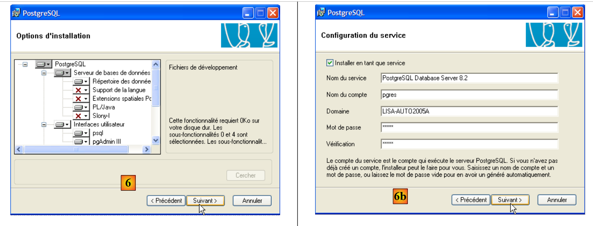 |
- in [6]: scegliere un'installazione tipica accettando i valori predefiniti
- in [6b]: creazione dell’account Windows che avvierà il servizio PostgreSQL, in questo caso l’account pgres con la password pgres.
 |
- in [7]: lasciare che PostgreSQL crei l'account [pgres] se non esiste già
- in [8]: impostare l'account amministratore di SGBD, in questo caso postgres con la password postgres
 |
- in [9] e [10]: accettare i valori predefiniti fino alla fine della procedura guidata. Verrà installato PostgreSQL.
L'installazione di PostgreSQL crea una cartella all'interno di [Démarrer / Programmes ]:

5.6.2. Avvia / Arresta PostgreSQL
Il server PostgreSQL è stato installato come servizio Windows ad avvio automatico; c.a.d viene avviato all’avvio di Windows. Questa modalità di funzionamento è poco pratica. La modificheremo:
[Démarrer / Panneau de configuration / Performances et maintenance / Outils d'administration / Services ]:
 |
- in [1]: facciamo doppio clic su [Services]
- in [2]: si nota che è presente un servizio denominato [PostgreSQL], che è avviato ([3]) e che il suo avvio è automatico ([4]).
Per modificare questa impostazione, facciamo doppio clic sul servizio [PostgreSQL]:
 |
- in [1]: impostiamo l’avvio del servizio su manuale
- in [2]: lo si arresta
- in [3]: si conferma la nuova configurazione del servizio
Per avviare e arrestare manualmente il servizio PostgreSQL, è possibile utilizzare i collegamenti presenti nella cartella [PostgreSQL]:
 |
- in [1]: il collegamento per avviare PostgreSQL
- in [2]: il collegamento per chiuderlo
5.6.3. Gestire PostgreSQL
Nello screenshot qui sopra, l’applicazione [pgAdmin III] (3) consente di gestire SGBD e PostgreSQL. Avviamo SGBD, quindi [pgAdmin III] tramite il menu in alto:
 |
- in [1]: fare doppio clic sul server PostgreSQL per connettersi
- in [2,3]: effettuare l'accesso come amministratore di SGBD, in questo caso (postgres / postgres)
 |
- su [4]: l'unico database esistente
- in [5]: l'unico utente esistente
5.6.4. Creazione di un utente jpa e di un database jpa
Il tutorial utilizza PostgreSQL con un database denominato jpa e un utente con lo stesso nome. Ora li creiamo. Innanzitutto l’utente:
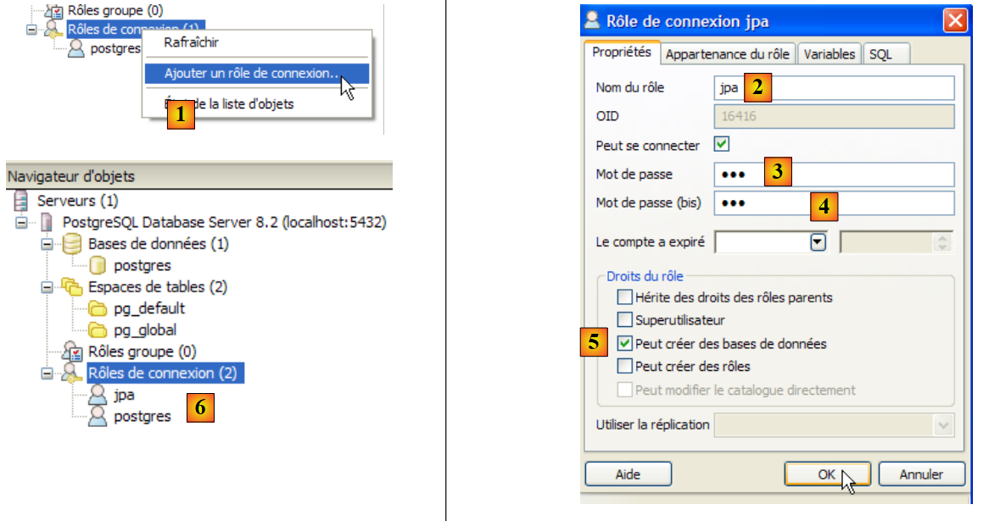 |
- in [1]: si crea un nuovo ruolo (~utente)
- in [2]: creazione dell’utente jpa
- in [3]: la sua password è jpa
- in [4]: si conferma la password
- in [5]: si autorizza l'utente a creare database
- in [6]: l'utente [jpa] compare tra i ruoli di accesso
Ora il database:
 |
- in [1]: si crea una nuova connessione al server
- in [2]: si chiamerà jpa
- in [3]: macchina a cui ci si vuole connettere
- in [4]: l'utente che effettua la connessione
- in [5]: la sua password. Si conferma la configurazione della connessione tramite [OK]
- in [6]: la nuova connessione è stata creata. Appartiene all'utente jpa. Quest'ultimo creerà ora un nuovo database:
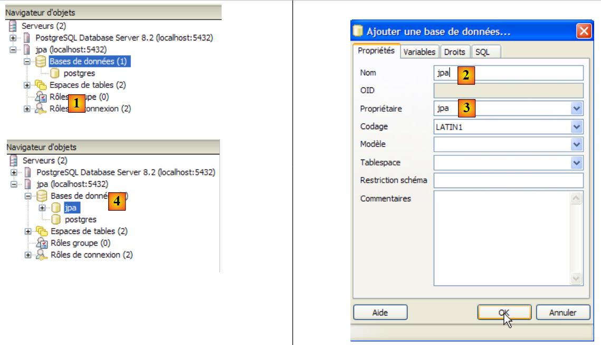 |
- n [1]: si aggiunge un nuovo database
- in [2]: il suo nome è jpa
- in [3]: il proprietario è l'utente jpa creato in precedenza. Si conferma con [OK]
- in [4]: il database jpa è stato creato. Basta un semplice clic per collegarci ad esso e scoprirne la struttura:
 |
- in [5]: compaiono gli oggetti dello schema [jpa], in particolare le tabelle. Non ce ne sono ancora. Un clic con il tasto destro del mouse consentirebbe di crearne alcune. Lasciamo che sia il lettore a farlo.
Ora creeremo la stessa tabella [ARTICLES] utilizzata in precedenza con SGBD, utilizzando lo script SQL [schema-articles.sql] generato al paragrafo 5.4.6.
 |
- in [1]: aprire l'editor SQL
- in [2]: aprire uno script SQL
- in [3]: specificare lo script [schema-articles.sql] creato al paragrafo 5.4.6.
 |
- in [4]: lo script è stato caricato. Lo si esegue.
- in [5]: è stata creata la tabella [ARTICLES].
- in [6, 7]: il suo contenuto
5.6.5. Driver JDBC di PostgreSQL
Il driver JDBC di PostgreSQL è disponibile nella cartella [jdbc] della cartella di installazione di PostgreSQL:
 |
Inseriamo l'archivio Jdbc come nei casi precedenti (paragrafo 5.4.7) nella cartella <jdbc>:
 |
Per testare questo driver JDBC, utilizzeremo Eclipse e il plugin SQL Explorer. Si invita il lettore a seguire la procedura illustrata al paragrafo 5.4.7. Di seguito presentiamo alcune schermate significative:
 |
- in [1]: è stato specificato l’archivio del driver JDBC da PostgreSQL
- in [2]: è disponibile il driver JDBC da PostgreSQL
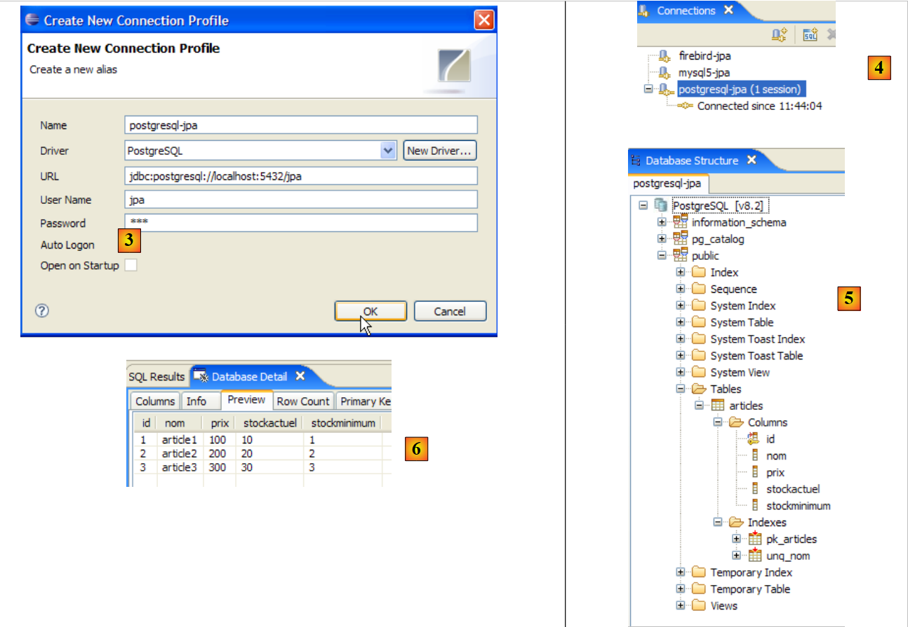 |
- in [3]: definizione della connessione (utente, password)=(jpa, jpa)
- in [4]: la connessione è attiva
- in [5]: database connesso
- in [6]: il contenuto della tabella [ARTICLES]
5.7. Il SGBD e Oracle 10g Express
5.7.1. Installazione
Il SGBD Oracle 10g Express è disponibile all'URL [http://www.oracle.com/technology/software/products/database/xe/index.html]:
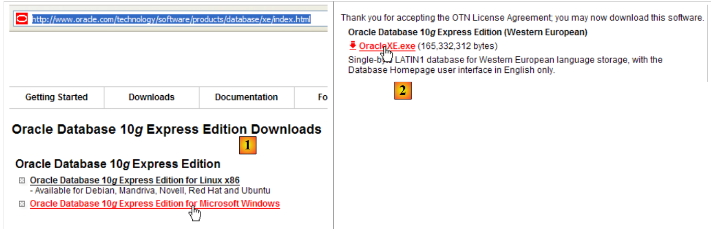 |
- in [1]: il sito di download di Oracle 10g Express
- all'indirizzo [2]: scegliere una versione per Windows. Una volta scaricato il file, eseguirlo:
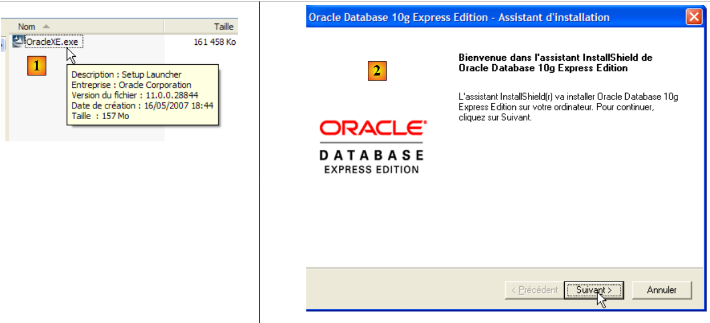 |
- in [1]: fare doppio clic sul file [OracleXE.exe]
- in [2]: la prima pagina della procedura guidata di installazione
 |
- in [3]: accettare la licenza
- in [4]: accettare i valori predefiniti.
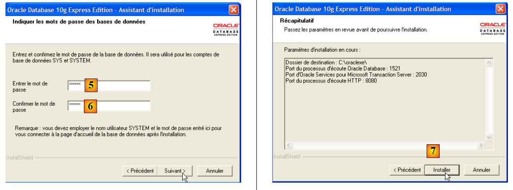 |
- in [5,6]: l'utente SYSTEM avrà la password "system".
- in [7]: si avvia l'installazione
L'installazione di Oracle 10g Express crea una cartella in [Démarrer / Programmes ]:

5.7.2. Avvio / Arresto di Oracle 10g
Come per i precedenti SGBD, Oracle 10g è stato installato come servizio Windows ad avvio automatico. Modifichiamo questa configurazione:
[Démarrer / Panneau de configuration / Performances et maintenance / Outils d'administration / Services ]:
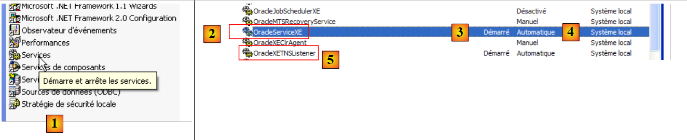 |
- in [1]: facciamo doppio clic su [Services]
- in [2]: si nota che è presente un servizio denominato [OracleServiceXE], che è in esecuzione ([3]) e che il suo avvio è automatico ([4]).
- in [5]: è attivo anche un altro servizio Oracle, denominato "Listener", con avvio automatico.
Per modificare questo comportamento, facciamo doppio clic sul servizio [OracleServiceXE]:
 |
- in [1]: impostiamo l’avvio del servizio su manuale
- in [2]: lo si arresta
- in [3]: si conferma la nuova configurazione del servizio
Si procederà allo stesso modo con il servizio [OracleXETNSListener] (cfr. [5] sopra). Per avviare e arrestare manualmente il servizio OracleServiceXE, è possibile utilizzare i collegamenti presenti nella cartella [Oracle]:
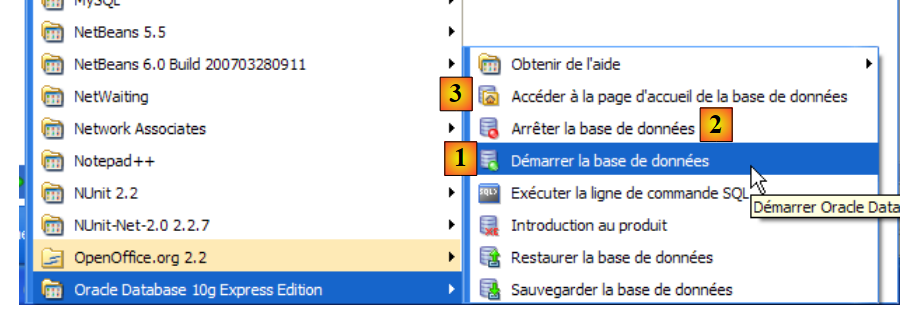 |
- in [1]: per avviare il servizio SGBD
- in [2]: per arrestarlo
- in [3]: per gestirlo (il che lo avvia se non è già in esecuzione)
5.7.3. Creazione di un utente jpa e di un database jpa
Nello screenshot qui sopra, l’applicazione [3] consente di amministrare SGBD Oracle 10g Express. Avviamo SGBD [1], quindi l’applicazione di amministrazione [3] tramite il menu sopra riportato:
 |
- in [1]: effettuare l’accesso come amministratore di SGBD, in questo caso (system / system)
- in [2]: si crea un nuovo utente
 |
- in [4]: nome utente
- in [5, 6]: la sua password, in questo caso jpa
- in [7]: l'utente jpa è stato creato
In Oracle, un utente viene automaticamente associato a un database con lo stesso nome. Il database jpa esiste quindi contemporaneamente all'utente jpa.
5.7.4. Creazione della tabella [ARTICLES] del database jpa
OracleXE è stato installato con un client SQL che funziona in modalità terminale. È possibile lavorare in modo più comodo con l' e SQL Developer, anch'esso fornito da Oracle. È disponibile sul sito:
[http://www.oracle.com/technology/products/database/sql_developer/index.html]
 |
- in [1]: il sito di download
- in [2]: scegliere una versione per Windows senza JRE se quest’ultimo è già installato (come in questo caso), poiché [SQL Developer] è un’applicazione Java.
 |
- in [3]: decomprimere il file ZIP scaricato
- in [4]: avviare l'eseguibile [sqldeveloper.exe]
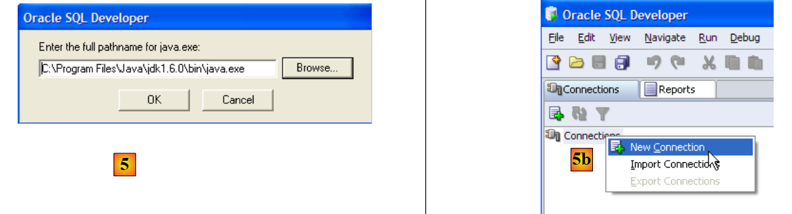 |
- in [5]: al primo avvio di [SQL Developer], specificare il percorso del JRE installato sul computer
- in [5b]: creare una nuova connessione
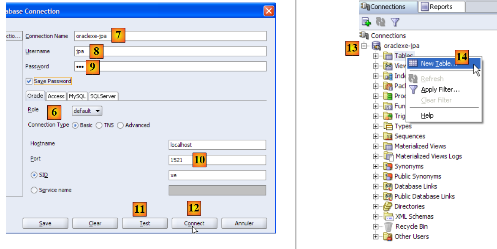 |
- in [6]: SQL Developer consente di connettersi a vari SGBD. Selezionare Oracle.
- in [7]: nome assegnato alla connessione che si sta creando
- in [8]: proprietario della connessione
- in [9]: la sua password (jpa)
- in [10]: mantenere i valori predefiniti
- in [11]: per testare la connessione (Oracle deve essere in esecuzione)
- in [12]: per completare la configurazione della connessione
- in [13]: gli oggetti del database jpa
- in [14]: è possibile creare tabelle. Come nei casi precedenti, creeremo la tabella [ARTICLES] a partire dallo script creato al paragrafo 5.4.6.
 |
- in [15]: si apre uno script SQL
- in [16]: si indica lo script SQL creato al paragrafo 5.4.6.
- in [17]: lo script che verrà eseguito
 |
- in [18]: il risultato dell'esecuzione: è stata creata la tabella [ARTICLES]. Fare doppio clic su di essa per accedere alle sue proprietà.
- in [19]: il contenuto della tabella.
5.7.5. Driver JDBC di OracleXE
Il driver JDBC di OracleXE è disponibile nella cartella [jdbc/lib] della cartella di installazione di OracleXE [1]:
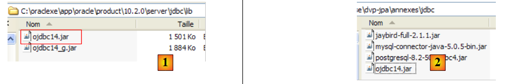 |
Inseriamo l'archivio JDBC [ojdbc14.jar] come fatto in precedenza (paragrafo 5.4.7) nella cartella <jdbc> [2]:
Per testare questo driver JDBC, utilizzeremo Eclipse e il plugin SQL Explorer. Si invita il lettore a seguire la procedura illustrata al paragrafo 5.4.7. Di seguito presentiamo alcune schermate significative:
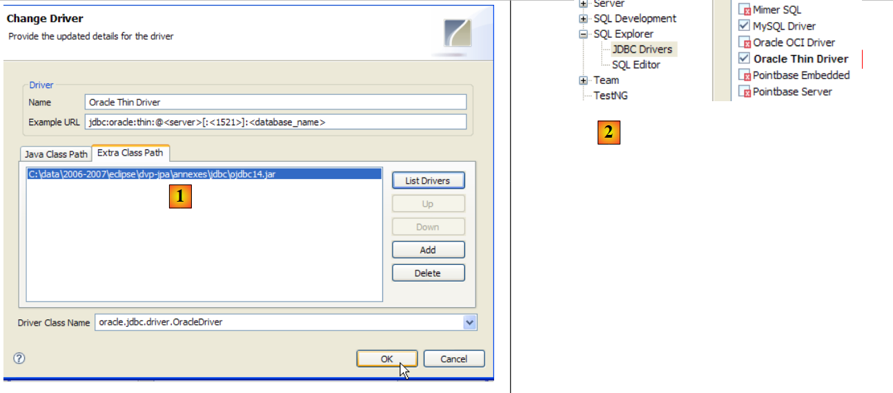 |
- in [1]: è stato specificato l’archivio del driver JDBC da OracleXE
- in [2]: è disponibile il driver JDBC da OracleXE
 |
- in [3]: definizione della connessione (user, password)=(jpa, jpa)
- in [4]: la connessione è attiva
- in [5]: database connesso
- in [6]: il contenuto della tabella [ARTICLES]
5.8. Il SGBD SQL Server Express 2005
5.8.1. Installazione
Il SGBD SQL Server Express 2005 è disponibile all'URL [http://msdn.microsoft.com/vstudio/express/sql/download/]:
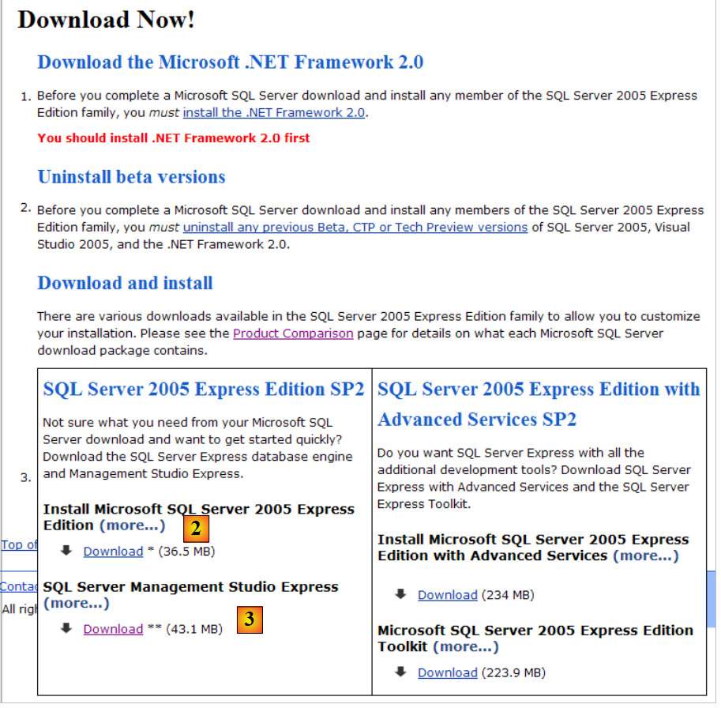 |
- in [1]: prima scaricare e installare la piattaforma .NET 2.0
- in [2]: quindi installare e scaricare SQL Server Express 2005
- in [3]: quindi installare e scaricare SQL Server Management Studio Express, che consente di amministrare SQL Server
L'installazione di SQL Server Express crea una cartella in [Démarrer / Programmes ]:
 |
- in [1]: l'applicazione di configurazione di SQL Server. Consente inoltre di avviare/arrestare il server
- in [2]: l'applicazione di amministrazione del server
5.8.2. Avvia / Arresta il server SQL
Come per i precedenti SGBD, il server SQL Express è stato installato come servizio Windows con avvio automatico. Modifichiamo questa configurazione:
[Démarrer / Panneau de configuration / Performances et maintenance / Outils d'administration / Services ]:
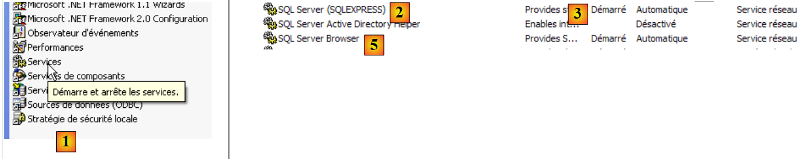 |
- in [1]: facciamo doppio clic su [Services]
- in [2]: si nota che è presente un servizio denominato [SQL Server], che è in esecuzione ([3]) e che il suo avvio è automatico ([4]).
- In [5]: è attivo anche un altro servizio collegato a SQL Server, denominato "SQL Server Browser", con avvio automatico.
Per modificare questo comportamento, facciamo doppio clic sul servizio [SQL Server]:
 |
- in [1]: impostiamo l’avvio del servizio su manuale
- in [2]: lo si arresta
- in [3]: si conferma la nuova configurazione del servizio
Si procederà allo stesso modo con il servizio [SQL Server Browser] (cfr. [5] sopra). Per avviare e arrestare manualmente il servizio SQL server, è possibile utilizzare l'applicazione [1] presente nella cartella [SQL server]:
 |
 |
- in [1]: assicurarsi che il protocollo TCP/IP sia attivo (enabled), quindi accedere alle proprietà del protocollo.
- in [2]: nella scheda [IP Addresses], opzione [IPAll]:
- il campo [TCP Dynamic ports] viene lasciato vuoto
- la porta di ascolto del server è impostata su 1433 in [TCP Port]
 |
- in [3]: un clic con il tasto destro del mouse sul servizio [SQL Server] consente di accedere alle opzioni di avvio/arresto del server. In questo caso, lo si avvia.
- in [4]: il server SQL è in esecuzione
5.8.3. Creazione di un utente jpa e di un database jpa
Avviamo SGBD come indicato sopra, quindi l’applicazione di amministrazione [1] tramite il menu sottostante:
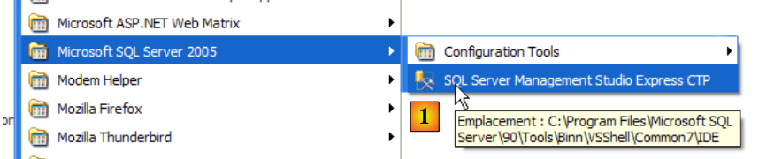 |
 |
- in [1]: ci si connette al server SQL come amministratore di Windows
- in [2]: configurare le proprietà della connessione
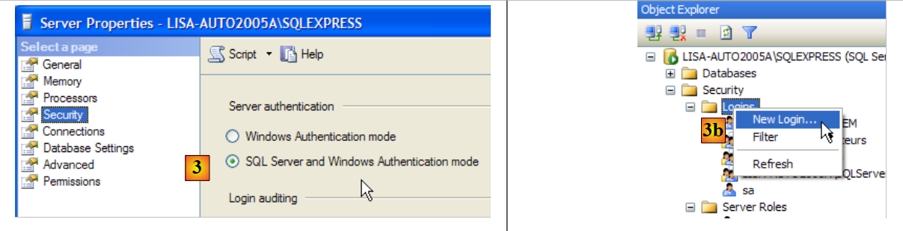 |
- in [3]: si autorizza una modalità mista di connessione al server: sia con un login Windows (un utente Windows), sia con un login al server SQL (account definito all’interno del server SQL, indipendente da qualsiasi account Windows).
- in [3b]: si crea un utente del server SQL
 |
- in [4]: opzione [General]
- in [5]: il nome utente
- in [6]: la password (jpa qui)
- in [7]: opzione [Server Roles]
- in [8]: l'utente jpa avrà il diritto di creare database
Confermiamo questa configurazione:
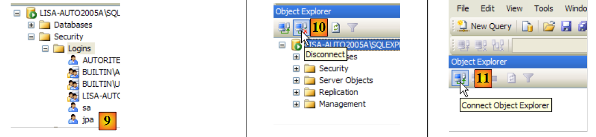 |
- in [9]: l'utente jpa è stato creato
- in [10]: ci si disconnette
- in [11]: ci si riconnette
 |
- in [12]: si effettua l'accesso come utente jpa/jpa
- in [13]: una volta effettuato l'accesso, l'utente jpa crea un database
 |
- in [14]: il database si chiamerà jpa
- in [15]: e apparterrà all'utente jpa
- in [16]: il database jpa è stato creato
5.8.4. Creazione della tabella [ARTICLES] del database jpa
Come negli esempi precedenti, creeremo la tabella [ARTICLES] utilizzando lo script creato al paragrafo 5.4.6.
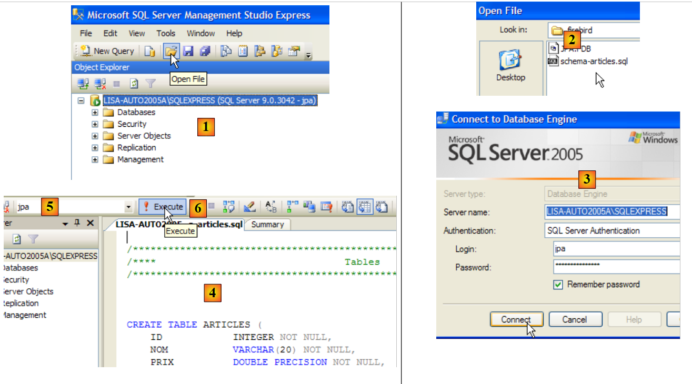 |
- in [1]: si apre uno script SQL
- in [2]: si indica lo script SQL creato al paragrafo 5.4.6, pagina 240.
- in [3]: è necessario effettuare nuovamente l'autenticazione (jpa/jpa)
- in [4]: lo script che verrà eseguito
- in [5]: selezionare il database in cui verrà eseguito lo script
- in [6]: eseguirlo
 |
- in [7]: il risultato dell'esecuzione: è stata creata la tabella [ARTICLES].
- in [8]: si richiede di visualizzarne il contenuto
- in [9]: il contenuto della tabella.
5.8.5. Driver JDBC di SQL Server Express
 |
- in [1]: una ricerca su Google con il testo [Microsoft SQL Server 2005 JDBC Driver] ci porta alla pagina di download del driver JDBC. Selezioniamo la versione più recente
- in [2]: il file scaricato. Facciamo doppio clic su di esso. Ha luogo una decompressione che crea una cartella in cui si trova il driver Jdbc [3]
- in [4]: inseriamo l’archivio Jdbc [sqljdbc.jar] come i precedenti (paragrafo 5.4.7) nella cartella <jdbc>
Per testare questo driver JDBC, utilizzeremo Eclipse e il plugin SQL Explorer. Si invita il lettore a seguire la procedura illustrata al paragrafo 5.4.7. Di seguito presentiamo alcune schermate significative:
 |
- in [1]: è stato specificato l’archivio del driver JDBC di SQL Server
- in [2]: è disponibile il driver JDBC del server SQL
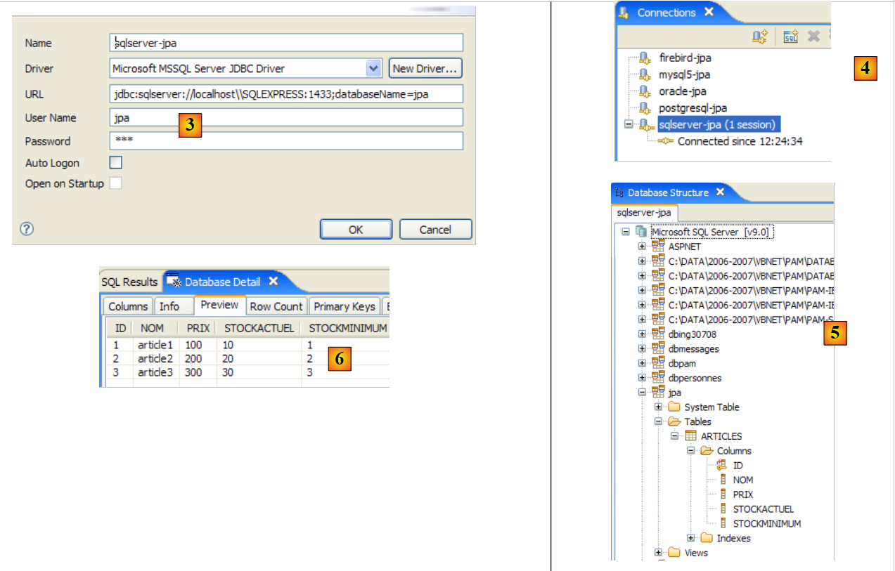 |
- in [3]: definizione della connessione (utente, password)=(jpa, jpa)
- in [4]: la connessione è attiva
- in [5]: database connesso
- in [6]: il contenuto della tabella [ARTICLES]
5.9. Il SGBD e HSQLDB
5.9.1. Installazione
Il SGBD HSQLDB è disponibile all'URL [http://sourceforge.net/projects/hsqldb]. Si tratta di un SGBD scritto in Java, molto leggero in termini di memoria, che gestisce database in memoria e non su disco. Il risultato è un'elevatissima velocità di esecuzione delle query. Questo è il suo principale vantaggio. I database così creati in memoria possono essere recuperati quando il server viene arrestato e poi riavviato. Infatti, i comandi SQL emessi per creare i database vengono memorizzati in un file di log per essere riprodotti al successivo avvio del server. Si ottiene così una persistenza dei database nel tempo.
Il metodo presenta dei limiti e HSQLDB non è uno strumento destinato a un uso commerciale. Il suo principale vantaggio risiede nei test o nelle applicazioni dimostrative. Ad esempio, il fatto che HSQLDB sia scritto in Java consente di includerlo nelle attività di Ant (Another Neat Tool), uno strumento Java per l’automazione delle attività. In questo modo, i test giornalieri sui codici in fase di sviluppo, automatizzati da Ant, potranno integrare test sui database gestiti da SGBD e HSQLDB. Il server verrà avviato, arrestato e gestito tramite attività Java.
 |
- in [1]: il sito di download
- in [2]: scaricare la versione più recente
 |
- in [3]: decomprimere il file zip scaricato
- in [4]: la cartella [hsqldb] risultante dalla decompressione
- in [5]: la cartella [demo] che contiene lo script per avviare il server [hsql] [6] e, in [7], quello che consente di avviare uno strumento di amministrazione del server.
5.9.2. Avvio/Arresto di HSQLDB
Per avviare il server HSQLDB, fare doppio clic sull’applicazione [runManager.bat] [6] sopra indicata:
 |
- in [1]: si nota che per arrestare il server sarà sufficiente premere Ctrl-C nella finestra.
5.9.3. Il database [test]
Il database gestito di default si trova nella cartella [data]:
 |
- in [1]: all’avvio, il SGBD HSQL esegue lo script denominato [test.script]
- riga 1: viene creato uno schema [public]
- riga 2: viene creato un utente [sa] con password vuota
- riga 3: all'utente [sa] vengono assegnati i diritti di amministratore
Alla fine, è stato creato un utente con diritti di amministrazione. È questo utente che utilizzeremo in seguito.
5.9.4. Driver JDBC di HSQL
Il driver JDBC di SGBD HSQL si trova nella cartella [lib]:
 |
- in [1]: l'archivio [hsqldb.jar] contiene il driver JDBC di SGBD e HSQL
- in [2]: inseriamo questo archivio come i precedenti (paragrafo 5.4.7) nella cartella <jdbc>
Per verificare questo driver JDBC, utilizzeremo Eclipse e il plugin SQL Explorer. Si invita il lettore a seguire la procedura illustrata al paragrafo 5.4.7. Di seguito presentiamo alcune schermate significative:
- in [1]: [window / preferences / SQL Explorer / JDBC Drivers]
- in [2]: si configura il server [HSQLDB]
- in [3]: si indica l’archivio [hsqldb.jar] contenente il driver Jdbc
- in [4]: il nome della classe Java del driver JDBC
- in [5]: il driver JDBC è configurato
Fatto ciò, ci si connette al server HSQL. È necessario avviarlo in precedenza.
 |
- in [6]: si crea una nuova connessione
- in [7]: le si assegna un nome
- in [8]: si desidera connettersi al server HSQLDB
- in [9]: l'URL del database a cui ci si vuole connettere. Sarà il database [test] visto in precedenza.
- in [10]: ci si connette come utente [sa]. Abbiamo visto che era l’amministratore di SGBD.
- in [11]: l'utente [sa] non ha una password.
Confermiamo la configurazione della connessione.
 |
- in [12]: si effettua l'accesso
- in [13]: si effettua l'identificazione
- in [14]: connessione stabilita
 |
- in [15]: lo schema [PUBLIC] non ha ancora una tabella
- in [16]: si creerà la tabella [ARTICLES] a partire dallo script [schema-articles.sql] creato al paragrafo 5.4.6.
- in [17]: si seleziona lo script
 |
- in [18]: lo script da eseguire
- in [19]: lo si esegue dopo aver rimosso tutti i commenti, poiché HSQLB non li accetta.
- una volta eseguito lo script, si aggiorna la visualizzazione del database in [20]
- in [21]: la tabella [ARTICLES] è presente
- in [22]: il suo contenuto
Arrestiamo e poi riavviamo il server HSQLDB. Fatto ciò, esaminiamo il file [test.script]:
Si nota che il file SGBD ha memorizzato i vari comandi SQL eseguiti durante la sessione precedente e che li riesegue all’avvio della nuova sessione. Si nota inoltre (riga 2) che la tabella [ARTICLES] viene creata in memoria (MEMORY). Ad ogni sessione, i comandi SQL emessi vengono memorizzati in [test.log] per essere ricopiati all’inizio della sessione successiva in [test.script] e riprodotti all’inizio della sessione.
5.10. Il SGBD e di Apache Derby
5.10.1. Installazione
Il SGBD Apache Derby è disponibile all'URL [http://db.apache.org/derby/]. Si tratta di un SGBD scritto anch'esso in Java e altrettanto leggero in termini di memoria. Presenta vantaggi analoghi a quelli del HSQLDB. Anche questo può essere integrato in applicazioni Java, c.a.d, diventare parte integrante dell’applicazione e funzionare all’interno della stessa JVM.
 |
- in [1]: il sito di download
- in [2,3]: scaricare la versione più recente
 |
- in [3]: decomprimere il file zip scaricato
- in [4]: la cartella [db-derby-*-bin] risultante dalla decompressione
- in [5]: la cartella [bin] che contiene lo script per avviare il server [db derby] [6] e, in [7], quello per arrestarlo.
5.10.2. Avvio / Arresto di Apache Derby (Db Derby)
Per avviare il server Db Derby, fare doppio clic sull'applicazione [startNetworkServer] [6] sopra indicata:
 |
- in [1]: il server è avviato. Lo si arresterà con l’applicazione [stopNetworkServer] [7] sopra indicata.
5.10.3. Driver JDBC per Db Derby
Il driver JDBC di SGBD per Db Derby si trova nella cartella [lib] della cartella di installazione:
 |
- in [1]: l'archivio [derbyclient.jar] contiene il driver JDBC di SGBD Db Derby
- in [2]: inseriamo questo archivio come i precedenti (paragrafo 5.4.7) nella cartella <jdbc>
Per testare questo driver JDBC, utilizzeremo Eclipse e il plugin SQL Explorer. Si invita il lettore a seguire la procedura illustrata al paragrafo 5.4.7. Di seguito presentiamo alcune schermate significative:
 |
- in [1]: [window / preferences / SQL Explorer / JDBC Drivers]
- in [2]: il driver JDBC di Apache Derby non è presente nell'elenco. Lo aggiungiamo.
 |
- in [3]: si assegna un nome al nuovo driver
- in [4]: si specifica il formato degli URL gestiti dal driver JDBC
- in [5]: si indica l'archivio .jar del driver JDBC
- in [5b]: il nome della classe Java del driver JDBC
- in [5c]: il driver JDBC è configurato
Fatto ciò, ci si connette al server Apache Derby. È necessario avviare il server in precedenza.
 |
- in [6]: si crea una nuova connessione
- in [7]: le si assegna un nome
- in [8]: si desidera connettersi al server Apache Derby
- in [9]: l'URL del database a cui ci si vuole connettere. Dopo l'inizio standard [jdbc:derby://localhost:1527], si inserirà il percorso di una cartella sul disco contenente un database Derby. L'opzione [create=true] consente di creare questa cartella se non esiste ancora.
- in [10,11]: ci si connette come utente [jpa/jpa]. Non ho approfondito la questione, ma sembra che si possa inserire qualsiasi nome utente e password. Qui si dichiara il proprietario del database, se create=true.
Confermare la configurazione della connessione.
 |
- in [12]: ci si connette
- in [13]: si effettua l’identificazione (jpa/jpa)
- in [14]: si è connessi
 |
- in [15]: lo schema [jpa] non compare ancora.
- in [16]: si creerà la tabella [ARTICLES] a partire dallo script [schema-articles.sql] creato al paragrafo 5.4.6.
- in [17]: si seleziona lo script
 |
- in [18]: lo script da eseguire
- in [19]: lo si esegue dopo aver rimosso tutti i commenti, poiché Apache Derby, come HSQLB, non li accetta.
 |
- una volta completata l’esecuzione dello script, si aggiorna in [20] la visualizzazione del database
- in [21]: lo schema [jpa] e la tabella [ARTICLES] sono presenti
- in [22]: il contenuto della tabella [ARTICLES]
 |
- in [23]: il contenuto della cartella [derby\jpa] in cui è stato creato il database.
5.11. Il framework Spring 2
Il framework Spring 2 è disponibile all'URL [http://www.springframework.org/download]:
 |
- in [1]: si scarica l'ultima versione
- in [2]: si scarica la versione detta "con dipendenze" poiché contiene gli archivi .jar degli strumenti di terze parti che Spring integra e di cui si ha sempre bisogno.
 |
- in [3]: si decomprime l'archivio scaricato
- in [4]: la cartella di installazione di Spring 2.1
 |
- in [5]: nella cartella <dist> si trovano gli archivi di Spring. L'archivio [spring.jar] raccoglie tutte le classi del framework Spring. Queste sono disponibili anche per moduli nella cartella <modules> in [6]. Se si conoscono i moduli necessari, è possibile trovarli qui. In questo modo si evita di includere nell’applicazione archivi di cui non ha bisogno.
 |
- in [7]: la cartella <lib> contiene gli archivi degli strumenti di terze parti utilizzati da Spring
- in [8]: alcuni file del progetto [jakarta-commons]
Quando il tutorial utilizza i file di Spring, è necessario recuperarli dalla cartella <dist> o dalla cartella <lib> della cartella di installazione di Spring.
5.12. Il contenitore EJB3 di JBoss
Il contenitore EJB3 di JBoss è disponibile all'URL [http://labs.jboss.com/jbossejb3/downloads/embeddableEJB3]:
 |
- in [1]: si scaricano JBoss e EJB3. Si nota la data del prodotto (settembre 2006), mentre il download avviene nel maggio 2007. Ci si può chiedere se questo prodotto sia ancora in fase di sviluppo.
- da [2]: il file scaricato
 |
- in [3]: il file zip decompresso
- in [4]: gli archivi [hibernate-all.jar, jboss-ejb3-all.jar, thirdparty-all.jar] costituiscono il contenitore EJB3 di JBoss. È necessario inserirli nel classpath dell’applicazione che utilizza questo contenitore.